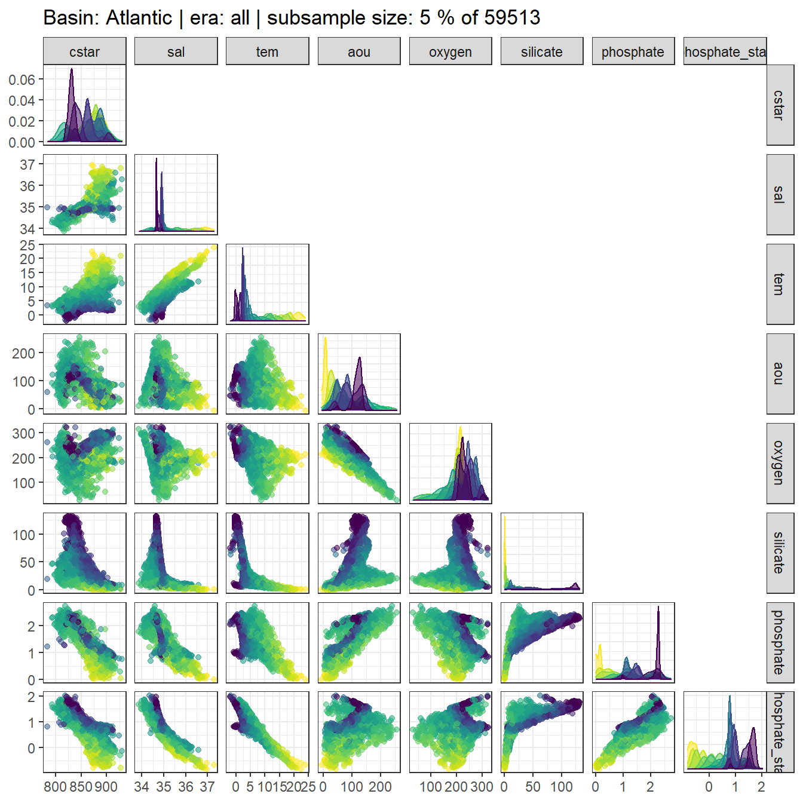

eMLR - assumption testing
Jens Daniel Müller
08 September, 2020
Last updated: 2020-09-08
Checks: 7 0
Knit directory: Cant_eMLR/
This reproducible R Markdown analysis was created with workflowr (version 1.6.2). The Checks tab describes the reproducibility checks that were applied when the results were created. The Past versions tab lists the development history.
Great! Since the R Markdown file has been committed to the Git repository, you know the exact version of the code that produced these results.
Great job! The global environment was empty. Objects defined in the global environment can affect the analysis in your R Markdown file in unknown ways. For reproduciblity it’s best to always run the code in an empty environment.
The command set.seed(20200707) was run prior to running the code in the R Markdown file. Setting a seed ensures that any results that rely on randomness, e.g. subsampling or permutations, are reproducible.
Great job! Recording the operating system, R version, and package versions is critical for reproducibility.
Nice! There were no cached chunks for this analysis, so you can be confident that you successfully produced the results during this run.
Great job! Using relative paths to the files within your workflowr project makes it easier to run your code on other machines.
Great! You are using Git for version control. Tracking code development and connecting the code version to the results is critical for reproducibility.
The results in this page were generated with repository version 04ee730. See the Past versions tab to see a history of the changes made to the R Markdown and HTML files.
Note that you need to be careful to ensure that all relevant files for the analysis have been committed to Git prior to generating the results (you can use wflow_publish or wflow_git_commit). workflowr only checks the R Markdown file, but you know if there are other scripts or data files that it depends on. Below is the status of the Git repository when the results were generated:
Ignored files:
Ignored: .Rproj.user/
Ignored: data/GLODAPv1_1/
Ignored: data/GLODAPv2_2016b_MappedClimatologies/
Ignored: data/GLODAPv2_2020/
Ignored: data/Gruber_2019/
Ignored: data/WOCE/
Ignored: data/World_Ocean_Atlas_2013_Clement/
Ignored: data/World_Ocean_Atlas_2018/
Ignored: data/eMLR/
Ignored: data/mapping/
Ignored: data/pCO2_atmosphere/
Ignored: dump/
Untracked files:
Untracked: output/figure/eMLR/data_preparation/all_cruises_clean/GLODAP_cruise_date_1981-07-14_n_2127_cruise_237_.png
Untracked: output/figure/eMLR/data_preparation/all_cruises_clean/GLODAP_cruise_date_1983-01-10_n_1238_cruise_238_.png
Untracked: output/figure/eMLR/data_preparation/all_cruises_clean/GLODAP_cruise_date_1983-11-25_n_409_cruise_239_.png
Untracked: output/figure/eMLR/data_preparation/all_cruises_clean/GLODAP_cruise_date_1984-07-22_n_237_cruise_223_.png
Untracked: output/figure/eMLR/data_preparation/all_cruises_clean/GLODAP_cruise_date_1986-03-13_n_1437_cruise_370_.png
Untracked: output/figure/eMLR/data_preparation/all_cruises_clean/GLODAP_cruise_date_1986-08-13_n_388_cruise_2_.png
Untracked: output/figure/eMLR/data_preparation/all_cruises_clean/GLODAP_cruise_date_1988-09-10_n_3164_cruise_242_.png
Untracked: output/figure/eMLR/data_preparation/all_cruises_clean/GLODAP_cruise_date_1989-02-17_n_59_cruise_621_.png
Untracked: output/figure/eMLR/data_preparation/all_cruises_clean/GLODAP_cruise_date_1989-05-22_n_489_cruise_368_.png
Untracked: output/figure/eMLR/data_preparation/all_cruises_clean/GLODAP_cruise_date_1989-08-18_n_483_cruise_371_.png
Untracked: output/figure/eMLR/data_preparation/all_cruises_clean/GLODAP_cruise_date_1990-02-18_n_548_cruise_28_.png
Untracked: output/figure/eMLR/data_preparation/all_cruises_clean/GLODAP_cruise_date_1991-05-01_n_255_cruise_679_.png
Untracked: output/figure/eMLR/data_preparation/all_cruises_clean/GLODAP_cruise_date_1991-08-06_n_690_cruise_285_.png
Untracked: output/figure/eMLR/data_preparation/all_cruises_clean/GLODAP_cruise_date_1991-09-15_n_402_cruise_286_.png
Untracked: output/figure/eMLR/data_preparation/all_cruises_clean/GLODAP_cruise_date_1992-03-11_n_825_cruise_717_.png
Untracked: output/figure/eMLR/data_preparation/all_cruises_clean/GLODAP_cruise_date_1992-05-27_n_475_cruise_243_.png
Untracked: output/figure/eMLR/data_preparation/all_cruises_clean/GLODAP_cruise_date_1992-09-20_n_861_cruise_296_.png
Untracked: output/figure/eMLR/data_preparation/all_cruises_clean/GLODAP_cruise_date_1992-10-30_n_1108_cruise_245_.png
Untracked: output/figure/eMLR/data_preparation/all_cruises_clean/GLODAP_cruise_date_1992-12-30_n_755_cruise_246_.png
Untracked: output/figure/eMLR/data_preparation/all_cruises_clean/GLODAP_cruise_date_1993-03-15_n_1026_cruise_247_.png
Untracked: output/figure/eMLR/data_preparation/all_cruises_clean/GLODAP_cruise_date_1993-05-16_n_170_cruise_219_.png
Untracked: output/figure/eMLR/data_preparation/all_cruises_clean/GLODAP_cruise_date_1993-05-31_n_517_cruise_300_.png
Untracked: output/figure/eMLR/data_preparation/all_cruises_clean/GLODAP_cruise_date_1993-07-11_n_479_cruise_338_.png
Untracked: output/figure/eMLR/data_preparation/all_cruises_clean/GLODAP_cruise_date_1993-08-02_n_1466_cruise_301_.png
Untracked: output/figure/eMLR/data_preparation/all_cruises_clean/GLODAP_cruise_date_1993-09-06_n_189_cruise_712_.png
Untracked: output/figure/eMLR/data_preparation/all_cruises_clean/GLODAP_cruise_date_1993-10-25_n_687_cruise_302_.png
Untracked: output/figure/eMLR/data_preparation/all_cruises_clean/GLODAP_cruise_date_1994-01-27_n_858_cruise_459_.png
Untracked: output/figure/eMLR/data_preparation/all_cruises_clean/GLODAP_cruise_date_1994-02-06_n_621_cruise_303_.png
Untracked: output/figure/eMLR/data_preparation/all_cruises_clean/GLODAP_cruise_date_1994-02-15_n_2468_cruise_297_.png
Untracked: output/figure/eMLR/data_preparation/all_cruises_clean/GLODAP_cruise_date_1994-04-27_n_1097_cruise_248_.png
Untracked: output/figure/eMLR/data_preparation/all_cruises_clean/GLODAP_cruise_date_1994-05-06_n_235_cruise_428_.png
Untracked: output/figure/eMLR/data_preparation/all_cruises_clean/GLODAP_cruise_date_1994-05-07_n_2489_cruise_270_.png
Untracked: output/figure/eMLR/data_preparation/all_cruises_clean/GLODAP_cruise_date_1994-10-11_n_777_cruise_102_.png
Untracked: output/figure/eMLR/data_preparation/all_cruises_clean/GLODAP_cruise_date_1995-01-18_n_722_cruise_67_.png
Untracked: output/figure/eMLR/data_preparation/all_cruises_clean/GLODAP_cruise_date_1995-01-29_n_812_cruise_361_.png
Untracked: output/figure/eMLR/data_preparation/all_cruises_clean/GLODAP_cruise_date_1995-02-13_n_1808_cruise_250_.png
Untracked: output/figure/eMLR/data_preparation/all_cruises_clean/GLODAP_cruise_date_1995-03-12_n_218_cruise_362_.png
Untracked: output/figure/eMLR/data_preparation/all_cruises_clean/GLODAP_cruise_date_1995-03-29_n_1453_cruise_251_.png
Untracked: output/figure/eMLR/data_preparation/all_cruises_clean/GLODAP_cruise_date_1995-05-13_n_1432_cruise_252_.png
Untracked: output/figure/eMLR/data_preparation/all_cruises_clean/GLODAP_cruise_date_1995-06-26_n_1077_cruise_253_.png
Untracked: output/figure/eMLR/data_preparation/all_cruises_clean/GLODAP_cruise_date_1995-08-01_n_1572_cruise_254_.png
Untracked: output/figure/eMLR/data_preparation/all_cruises_clean/GLODAP_cruise_date_1995-09-02_n_421_cruise_431_.png
Untracked: output/figure/eMLR/data_preparation/all_cruises_clean/GLODAP_cruise_date_1995-10-10_n_1551_cruise_339_.png
Untracked: output/figure/eMLR/data_preparation/all_cruises_clean/GLODAP_cruise_date_1995-11-18_n_689_cruise_256_.png
Untracked: output/figure/eMLR/data_preparation/all_cruises_clean/GLODAP_cruise_date_1995-12-26_n_1346_cruise_257_.png
Untracked: output/figure/eMLR/data_preparation/all_cruises_clean/GLODAP_cruise_date_1996-02-11_n_2158_cruise_280_.png
Untracked: output/figure/eMLR/data_preparation/all_cruises_clean/GLODAP_cruise_date_1996-03-07_n_1129_cruise_374_.png
Untracked: output/figure/eMLR/data_preparation/all_cruises_clean/GLODAP_cruise_date_1996-05-01_n_518_cruise_334_.png
Untracked: output/figure/eMLR/data_preparation/all_cruises_clean/GLODAP_cruise_date_1996-06-07_n_1030_cruise_288_.png
Untracked: output/figure/eMLR/data_preparation/all_cruises_clean/GLODAP_cruise_date_1996-06-25_n_242_cruise_618_.png
Untracked: output/figure/eMLR/data_preparation/all_cruises_clean/GLODAP_cruise_date_1996-09-09_n_552_cruise_68_.png
Untracked: output/figure/eMLR/data_preparation/all_cruises_clean/GLODAP_cruise_date_1996-09-26_n_85_cruise_40_.png
Untracked: output/figure/eMLR/data_preparation/all_cruises_clean/GLODAP_cruise_date_1997-05-26_n_1040_cruise_160_.png
Untracked: output/figure/eMLR/data_preparation/all_cruises_clean/GLODAP_cruise_date_1997-05-27_n_309_cruise_42_.png
Untracked: output/figure/eMLR/data_preparation/all_cruises_clean/GLODAP_cruise_date_1997-06-14_n_1462_cruise_259_.png
Untracked: output/figure/eMLR/data_preparation/all_cruises_clean/GLODAP_cruise_date_1997-07-30_n_1132_cruise_260_.png
Untracked: output/figure/eMLR/data_preparation/all_cruises_clean/GLODAP_cruise_date_1997-08-25_n_798_cruise_261_.png
Untracked: output/figure/eMLR/data_preparation/all_cruises_clean/GLODAP_cruise_date_1997-11-22_n_211_cruise_464_.png
Untracked: output/figure/eMLR/data_preparation/all_cruises_clean/GLODAP_cruise_date_1997-12-20_n_514_cruise_434_.png
Untracked: output/figure/eMLR/data_preparation/all_cruises_clean/GLODAP_cruise_date_1998-02-11_n_1024_cruise_341_.png
Untracked: output/figure/eMLR/data_preparation/all_cruises_clean/GLODAP_cruise_date_1998-06-28_n_52_cruise_449_.png
Untracked: output/figure/eMLR/data_preparation/all_cruises_clean/GLODAP_cruise_date_1998-08-03_n_187_cruise_450_.png
Untracked: output/figure/eMLR/data_preparation/all_cruises_clean/GLODAP_cruise_date_1998-11-24_n_251_cruise_465_.png
Untracked: output/figure/eMLR/data_preparation/all_cruises_clean/GLODAP_cruise_date_1999-01-07_n_120_cruise_466_.png
Untracked: output/figure/eMLR/data_preparation/all_cruises_clean/GLODAP_cruise_date_1999-05-17_n_107_cruise_467_.png
Untracked: output/figure/eMLR/data_preparation/all_cruises_clean/GLODAP_cruise_date_1999-05-31_n_338_cruise_461_.png
Untracked: output/figure/eMLR/data_preparation/all_cruises_clean/GLODAP_cruise_date_1999-06-23_n_381_cruise_46_.png
Untracked: output/figure/eMLR/data_preparation/all_cruises_clean/GLODAP_cruise_date_1999-09-05_n_89_cruise_468_.png
Untracked: output/figure/eMLR/data_preparation/all_cruises_clean/GLODAP_cruise_date_2000-01-20_n_186_cruise_472_.png
Untracked: output/figure/eMLR/data_preparation/all_cruises_clean/GLODAP_cruise_date_2000-05-22_n_433_cruise_24_.png
Untracked: output/figure/eMLR/data_preparation/all_cruises_clean/GLODAP_cruise_date_2000-10-16_n_380_cruise_437_.png
Untracked: output/figure/eMLR/data_preparation/all_cruises_clean/GLODAP_cruise_date_2000-10-26_n_605_cruise_82_.png
Untracked: output/figure/eMLR/data_preparation/all_cruises_clean/GLODAP_cruise_date_2001-06-15_n_1143_cruise_83_.png
Untracked: output/figure/eMLR/data_preparation/all_cruises_clean/GLODAP_cruise_date_2001-06-23_n_381_cruise_476_.png
Untracked: output/figure/eMLR/data_preparation/all_cruises_clean/GLODAP_cruise_date_2001-08-14_n_870_cruise_477_.png
Untracked: output/figure/eMLR/data_preparation/all_cruises_clean/GLODAP_cruise_date_2001-09-04_n_32_cruise_478_.png
Untracked: output/figure/eMLR/data_preparation/all_cruises_clean/GLODAP_cruise_date_2001-09-12_n_392_cruise_438_.png
Untracked: output/figure/eMLR/data_preparation/all_cruises_clean/GLODAP_cruise_date_2001-11-17_n_912_cruise_70_.png
Untracked: output/figure/eMLR/data_preparation/all_cruises_clean/GLODAP_cruise_date_2002-06-27_n_147_cruise_263_.png
Untracked: output/figure/eMLR/data_preparation/all_cruises_clean/GLODAP_cruise_date_2002-06-28_n_769_cruise_392_.png
Untracked: output/figure/eMLR/data_preparation/all_cruises_clean/GLODAP_cruise_date_2003-03-13_n_768_cruise_484_.png
Untracked: output/figure/eMLR/data_preparation/all_cruises_clean/GLODAP_cruise_date_2003-07-03_n_14_cruise_591_.png
Untracked: output/figure/eMLR/data_preparation/all_cruises_clean/GLODAP_cruise_date_2003-07-23_n_20_cruise_592_.png
Untracked: output/figure/eMLR/data_preparation/all_cruises_clean/GLODAP_cruise_date_2003-08-10_n_1153_cruise_56_.png
Untracked: output/figure/eMLR/data_preparation/all_cruises_clean/GLODAP_cruise_date_2003-09-07_n_2722_cruise_486_.png
Untracked: output/figure/eMLR/data_preparation/all_cruises_clean/GLODAP_cruise_date_2003-10-06_n_1055_cruise_264_.png
Untracked: output/figure/eMLR/data_preparation/all_cruises_clean/GLODAP_cruise_date_2003-11-03_n_976_cruise_265_.png
Untracked: output/figure/eMLR/data_preparation/all_cruises_clean/GLODAP_cruise_date_2003-11-19_n_1221_cruise_487_.png
Untracked: output/figure/eMLR/data_preparation/all_cruises_clean/GLODAP_cruise_date_2004-01-01_n_1682_cruise_488_.png
Untracked: output/figure/eMLR/data_preparation/all_cruises_clean/GLODAP_cruise_date_2004-01-23_n_13_cruise_593_.png
Untracked: output/figure/eMLR/data_preparation/all_cruises_clean/GLODAP_cruise_date_2004-04-22_n_913_cruise_695_.png
Untracked: output/figure/eMLR/data_preparation/all_cruises_clean/GLODAP_cruise_date_2004-04-29_n_59_cruise_556_.png
Untracked: output/figure/eMLR/data_preparation/all_cruises_clean/GLODAP_cruise_date_2004-05-22_n_202_cruise_167_.png
Untracked: output/figure/eMLR/data_preparation/all_cruises_clean/GLODAP_cruise_date_2004-05-26_n_10_cruise_463_.png
Untracked: output/figure/eMLR/data_preparation/all_cruises_clean/GLODAP_cruise_date_2004-06-20_n_14_cruise_594_.png
Untracked: output/figure/eMLR/data_preparation/all_cruises_clean/GLODAP_cruise_date_2004-06-22_n_806_cruise_393_.png
Untracked: output/figure/eMLR/data_preparation/all_cruises_clean/GLODAP_cruise_date_2004-07-12_n_63_cruise_595_.png
Untracked: output/figure/eMLR/data_preparation/all_cruises_clean/GLODAP_cruise_date_2004-07-20_n_3228_cruise_272_.png
Untracked: output/figure/eMLR/data_preparation/all_cruises_clean/GLODAP_cruise_date_2004-08-17_n_956_cruise_490_.png
Untracked: output/figure/eMLR/data_preparation/all_cruises_clean/GLODAP_cruise_date_2004-10-23_n_83_cruise_492_.png
Untracked: output/figure/eMLR/data_preparation/all_cruises_clean/GLODAP_cruise_date_2004-10-27_n_59_cruise_596_.png
Untracked: output/figure/eMLR/data_preparation/all_cruises_clean/GLODAP_cruise_date_2005-01-10_n_691_cruise_72_.png
Untracked: output/figure/eMLR/data_preparation/all_cruises_clean/GLODAP_cruise_date_2005-01-24_n_14_cruise_597_.png
Untracked: output/figure/eMLR/data_preparation/all_cruises_clean/GLODAP_cruise_date_2005-01-25_n_2240_cruise_350_.png
Untracked: output/figure/eMLR/data_preparation/all_cruises_clean/GLODAP_cruise_date_2005-01-25_n_59_cruise_558_.png
Untracked: output/figure/eMLR/data_preparation/all_cruises_clean/GLODAP_cruise_date_2005-03-08_n_67_cruise_494_.png
Untracked: output/figure/eMLR/data_preparation/all_cruises_clean/GLODAP_cruise_date_2005-04-28_n_60_cruise_559_.png
Untracked: output/figure/eMLR/data_preparation/all_cruises_clean/GLODAP_cruise_date_2005-05-25_n_890_cruise_683_.png
Untracked: output/figure/eMLR/data_preparation/all_cruises_clean/GLODAP_cruise_date_2005-05-30_n_242_cruise_168_.png
Untracked: output/figure/eMLR/data_preparation/all_cruises_clean/GLODAP_cruise_date_2005-06-11_n_1558_cruise_495_.png
Untracked: output/figure/eMLR/data_preparation/all_cruises_clean/GLODAP_cruise_date_2005-07-17_n_66_cruise_599_.png
Untracked: output/figure/eMLR/data_preparation/all_cruises_clean/GLODAP_cruise_date_2005-09-14_n_1837_cruise_266_.png
Untracked: output/figure/eMLR/data_preparation/all_cruises_clean/GLODAP_cruise_date_2005-09-30_n_178_cruise_496_.png
Untracked: output/figure/eMLR/data_preparation/all_cruises_clean/GLODAP_cruise_date_2005-10-25_n_69_cruise_600_.png
Untracked: output/figure/eMLR/data_preparation/all_cruises_clean/GLODAP_cruise_date_2005-12-08_n_2641_cruise_497_.png
Untracked: output/figure/eMLR/data_preparation/all_cruises_clean/GLODAP_cruise_date_2006-01-24_n_68_cruise_561_.png
Untracked: output/figure/eMLR/data_preparation/all_cruises_clean/GLODAP_cruise_date_2006-03-08_n_1719_cruise_306_.png
Untracked: output/figure/eMLR/data_preparation/all_cruises_clean/GLODAP_cruise_date_2006-04-25_n_38_cruise_562_.png
Untracked: output/figure/eMLR/data_preparation/all_cruises_clean/GLODAP_cruise_date_2006-06-04_n_587_cruise_25_.png
Untracked: output/figure/eMLR/data_preparation/all_cruises_clean/GLODAP_cruise_date_2006-06-21_n_968_cruise_498_.png
Untracked: output/figure/eMLR/data_preparation/all_cruises_clean/GLODAP_cruise_date_2006-07-11_n_37_cruise_603_.png
Untracked: output/figure/eMLR/data_preparation/all_cruises_clean/GLODAP_cruise_date_2006-10-26_n_68_cruise_604_.png
Untracked: output/figure/eMLR/data_preparation/all_cruises_clean/GLODAP_cruise_date_2007-01-23_n_85_cruise_564_.png
Untracked: output/figure/eMLR/data_preparation/all_cruises_clean/GLODAP_cruise_date_2007-02-28_n_1671_cruise_352_.png
Untracked: output/figure/eMLR/data_preparation/all_cruises_clean/GLODAP_cruise_date_2007-03-09_n_1058_cruise_501_.png
Untracked: output/figure/eMLR/data_preparation/all_cruises_clean/GLODAP_cruise_date_2007-04-11_n_1995_cruise_353_.png
Untracked: output/figure/eMLR/data_preparation/all_cruises_clean/GLODAP_cruise_date_2007-04-30_n_63_cruise_565_.png
Untracked: output/figure/eMLR/data_preparation/all_cruises_clean/GLODAP_cruise_date_2007-07-03_n_47_cruise_606_.png
Untracked: output/figure/eMLR/data_preparation/all_cruises_clean/GLODAP_cruise_date_2007-07-31_n_33_cruise_607_.png
Untracked: output/figure/eMLR/data_preparation/all_cruises_clean/GLODAP_cruise_date_2007-08-14_n_1209_cruise_502_.png
Untracked: output/figure/eMLR/data_preparation/all_cruises_clean/GLODAP_cruise_date_2007-09-16_n_478_cruise_667_.png
Untracked: output/figure/eMLR/data_preparation/all_cruises_clean/GLODAP_cruise_date_2007-10-30_n_1828_cruise_504_.png
Untracked: output/figure/eMLR/data_preparation/all_cruises_clean/GLODAP_cruise_date_2007-10-31_n_63_cruise_566_.png
Untracked: output/figure/eMLR/data_preparation/all_cruises_clean/GLODAP_cruise_date_2007-12-07_n_1654_cruise_505_.png
Untracked: output/figure/eMLR/data_preparation/all_cruises_clean/GLODAP_cruise_date_2008-01-08_n_551_cruise_74_.png
Untracked: output/figure/eMLR/data_preparation/all_cruises_clean/GLODAP_cruise_date_2008-01-16_n_3261_cruise_345_.png
Untracked: output/figure/eMLR/data_preparation/all_cruises_clean/GLODAP_cruise_date_2008-02-01_n_79_cruise_608_.png
Untracked: output/figure/eMLR/data_preparation/all_cruises_clean/GLODAP_cruise_date_2008-02-21_n_1640_cruise_354_.png
Untracked: output/figure/eMLR/data_preparation/all_cruises_clean/GLODAP_cruise_date_2008-03-02_n_996_cruise_385_.png
Untracked: output/figure/eMLR/data_preparation/all_cruises_clean/GLODAP_cruise_date_2008-03-15_n_927_cruise_19_.png
Untracked: output/figure/eMLR/data_preparation/all_cruises_clean/GLODAP_cruise_date_2008-04-06_n_841_cruise_75_.png
Untracked: output/figure/eMLR/data_preparation/all_cruises_clean/GLODAP_cruise_date_2008-04-28_n_57_cruise_568_.png
Untracked: output/figure/eMLR/data_preparation/all_cruises_clean/GLODAP_cruise_date_2008-05-28_n_416_cruise_171_.png
Untracked: output/figure/eMLR/data_preparation/all_cruises_clean/GLODAP_cruise_date_2008-06-22_n_868_cruise_394_.png
Untracked: output/figure/eMLR/data_preparation/all_cruises_clean/GLODAP_cruise_date_2008-10-21_n_363_cruise_506_.png
Untracked: output/figure/eMLR/data_preparation/all_cruises_clean/GLODAP_cruise_date_2009-01-07_n_345_cruise_674_.png
Untracked: output/figure/eMLR/data_preparation/all_cruises_clean/GLODAP_cruise_date_2009-02-16_n_672_cruise_675_.png
Untracked: output/figure/eMLR/data_preparation/all_cruises_clean/GLODAP_cruise_date_2009-02-27_n_1170_cruise_84_.png
Untracked: output/figure/eMLR/data_preparation/all_cruises_clean/GLODAP_cruise_date_2009-03-29_n_1063_cruise_676_.png
Untracked: output/figure/eMLR/data_preparation/all_cruises_clean/GLODAP_cruise_date_2009-04-17_n_3605_cruise_355_.png
Untracked: output/figure/eMLR/data_preparation/all_cruises_clean/GLODAP_cruise_date_2009-05-18_n_2663_cruise_507_.png
Untracked: output/figure/eMLR/data_preparation/all_cruises_clean/GLODAP_cruise_date_2009-05-23_n_317_cruise_172_.png
Untracked: output/figure/eMLR/data_preparation/all_cruises_clean/GLODAP_cruise_date_2009-07-12_n_145_cruise_635_.png
Untracked: output/figure/eMLR/data_preparation/all_cruises_clean/GLODAP_cruise_date_2009-08-02_n_127_cruise_26_.png
Untracked: output/figure/eMLR/data_preparation/all_cruises_clean/GLODAP_cruise_date_2009-11-10_n_319_cruise_63_.png
Untracked: output/figure/eMLR/data_preparation/all_cruises_clean/GLODAP_cruise_date_2009-11-18_n_158_cruise_1059_.png
Untracked: output/figure/eMLR/data_preparation/all_cruises_clean/GLODAP_cruise_date_2010-01-01_n_4235_cruise_273_.png
Untracked: output/figure/eMLR/data_preparation/all_cruises_clean/GLODAP_cruise_date_2010-01-25_n_932_cruise_699_.png
Untracked: output/figure/eMLR/data_preparation/all_cruises_clean/GLODAP_cruise_date_2010-03-30_n_2340_cruise_346_.png
Untracked: output/figure/eMLR/data_preparation/all_cruises_clean/GLODAP_cruise_date_2010-04-03_n_377_cruise_703_.png
Untracked: output/figure/eMLR/data_preparation/all_cruises_clean/GLODAP_cruise_date_2010-05-21_n_266_cruise_173_.png
Untracked: output/figure/eMLR/data_preparation/all_cruises_clean/GLODAP_cruise_date_2010-05-26_n_168_cruise_1085_.png
Untracked: output/figure/eMLR/data_preparation/all_cruises_clean/GLODAP_cruise_date_2010-06-19_n_842_cruise_395_.png
Untracked: output/figure/eMLR/data_preparation/all_cruises_clean/GLODAP_cruise_date_2010-07-25_n_1356_cruise_609_.png
Untracked: output/figure/eMLR/data_preparation/all_cruises_clean/GLODAP_cruise_date_2010-08-19_n_88_cruise_1064_.png
Untracked: output/figure/eMLR/data_preparation/all_cruises_clean/GLODAP_cruise_date_2010-10-16_n_161_cruise_2028_.png
Untracked: output/figure/eMLR/data_preparation/all_cruises_clean/GLODAP_cruise_date_2010-11-15_n_87_cruise_2029_.png
Untracked: output/figure/eMLR/data_preparation/all_cruises_clean/GLODAP_cruise_date_2010-12-22_n_1297_cruise_20_.png
Untracked: output/figure/eMLR/data_preparation/all_cruises_clean/GLODAP_cruise_date_2011-01-17_n_108_cruise_1065_.png
Untracked: output/figure/eMLR/data_preparation/all_cruises_clean/GLODAP_cruise_date_2011-01-30_n_270_cruise_1087_.png
Untracked: output/figure/eMLR/data_preparation/all_cruises_clean/GLODAP_cruise_date_2011-02-18_n_121_cruise_1066_.png
Untracked: output/figure/eMLR/data_preparation/all_cruises_clean/GLODAP_cruise_date_2011-03-21_n_2140_cruise_295_.png
Untracked: output/figure/eMLR/data_preparation/all_cruises_clean/GLODAP_cruise_date_2011-05-18_n_516_cruise_174_.png
Untracked: output/figure/eMLR/data_preparation/all_cruises_clean/GLODAP_cruise_date_2011-06-25_n_250_cruise_1067_.png
Untracked: output/figure/eMLR/data_preparation/all_cruises_clean/GLODAP_cruise_date_2011-07-07_n_2466_cruise_517_.png
Untracked: output/figure/eMLR/data_preparation/all_cruises_clean/GLODAP_cruise_date_2011-10-08_n_887_cruise_347_.png
Untracked: output/figure/eMLR/data_preparation/all_cruises_clean/GLODAP_cruise_date_2011-10-26_n_214_cruise_2031_.png
Untracked: output/figure/eMLR/data_preparation/all_cruises_clean/GLODAP_cruise_date_2012-01-28_n_253_cruise_1090_.png
Untracked: output/figure/eMLR/data_preparation/all_cruises_clean/GLODAP_cruise_date_2012-02-06_n_591_cruise_1002_.png
Untracked: output/figure/eMLR/data_preparation/all_cruises_clean/GLODAP_cruise_date_2012-02-19_n_242_cruise_1069_.png
Untracked: output/figure/eMLR/data_preparation/all_cruises_clean/GLODAP_cruise_date_2012-04-03_n_1103_cruise_329_.png
Untracked: output/figure/eMLR/data_preparation/all_cruises_clean/GLODAP_cruise_date_2012-04-15_n_111_cruise_2033_.png
Untracked: output/figure/eMLR/data_preparation/all_cruises_clean/GLODAP_cruise_date_2012-05-01_n_1390_cruise_330_.png
Untracked: output/figure/eMLR/data_preparation/all_cruises_clean/GLODAP_cruise_date_2012-06-07_n_152_cruise_1029_.png
Untracked: output/figure/eMLR/data_preparation/all_cruises_clean/GLODAP_cruise_date_2012-06-26_n_388_cruise_1092_.png
Untracked: output/figure/eMLR/data_preparation/all_cruises_clean/GLODAP_cruise_date_2012-07-05_n_715_cruise_1031_.png
Untracked: output/figure/eMLR/data_preparation/all_cruises_clean/GLODAP_cruise_date_2012-07-20_n_793_cruise_1071_.png
Untracked: output/figure/eMLR/data_preparation/all_cruises_clean/GLODAP_cruise_date_2012-08-14_n_1250_cruise_518_.png
Untracked: output/figure/eMLR/data_preparation/all_cruises_clean/GLODAP_cruise_date_2012-11-10_n_191_cruise_1073_.png
Untracked: output/figure/eMLR/data_preparation/all_cruises_clean/GLODAP_cruise_date_2012-12-05_n_231_cruise_2071_.png
Untracked: output/figure/eMLR/data_preparation/all_cruises_clean/GLODAP_cruise_date_2012-12-12_n_118_cruise_1074_.png
Untracked: output/figure/eMLR/data_preparation/all_cruises_clean/GLODAP_cruise_date_2012-12-15_n_828_cruise_1050_.png
Untracked: output/figure/eMLR/data_preparation/all_cruises_clean/GLODAP_cruise_date_2013-01-23_n_896_cruise_1051_.png
Untracked: output/figure/eMLR/data_preparation/all_cruises_clean/GLODAP_cruise_date_2013-01-29_n_369_cruise_1093_.png
Untracked: output/figure/eMLR/data_preparation/all_cruises_clean/GLODAP_cruise_date_2013-02-19_n_221_cruise_1076_.png
Untracked: output/figure/eMLR/data_preparation/all_cruises_clean/GLODAP_cruise_date_2013-03-14_n_222_cruise_2072_.png
Untracked: output/figure/eMLR/data_preparation/all_cruises_clean/GLODAP_cruise_date_2013-05-02_n_2816_cruise_1035_.png
Untracked: output/figure/eMLR/data_preparation/all_cruises_clean/GLODAP_cruise_date_2013-05-06_n_298_cruise_2073_.png
Untracked: output/figure/eMLR/data_preparation/all_cruises_clean/GLODAP_cruise_date_2013-06-09_n_233_cruise_1078_.png
Untracked: output/figure/eMLR/data_preparation/all_cruises_clean/GLODAP_cruise_date_2013-07-24_n_678_cruise_1079_.png
Untracked: output/figure/eMLR/data_preparation/all_cruises_clean/GLODAP_cruise_date_2013-08-21_n_883_cruise_1096_.png
Untracked: output/figure/eMLR/data_preparation/all_cruises_clean/GLODAP_cruise_date_2013-09-02_n_2030_cruise_1041_.png
Untracked: output/figure/eMLR/data_preparation/all_cruises_clean/GLODAP_cruise_date_2013-11-09_n_129_cruise_2036_.png
Untracked: output/figure/eMLR/data_preparation/all_cruises_clean/GLODAP_cruise_date_2013-12-06_n_137_cruise_2074_.png
Untracked: output/figure/eMLR/data_preparation/all_cruises_clean/GLODAP_cruise_date_2014-01-11_n_1766_cruise_1042_.png
Untracked: output/figure/eMLR/data_preparation/all_cruises_clean/GLODAP_cruise_date_2014-01-24_n_288_cruise_2075_.png
Untracked: output/figure/eMLR/data_preparation/all_cruises_clean/GLODAP_cruise_date_2014-02-22_n_253_cruise_2038_.png
Untracked: output/figure/eMLR/data_preparation/all_cruises_clean/GLODAP_cruise_date_2014-03-13_n_187_cruise_2076_.png
Untracked: output/figure/eMLR/data_preparation/all_cruises_clean/GLODAP_cruise_date_2014-04-18_n_2219_cruise_1036_.png
Untracked: output/figure/eMLR/data_preparation/all_cruises_clean/GLODAP_cruise_date_2014-04-29_n_78_cruise_2039_.png
Untracked: output/figure/eMLR/data_preparation/all_cruises_clean/GLODAP_cruise_date_2014-05-05_n_288_cruise_2077_.png
Untracked: output/figure/eMLR/data_preparation/all_cruises_clean/GLODAP_cruise_date_2014-05-18_n_272_cruise_2040_.png
Untracked: output/figure/eMLR/data_preparation/all_cruises_clean/GLODAP_cruise_date_2014-06-16_n_195_cruise_2078_.png
Untracked: output/figure/eMLR/data_preparation/all_cruises_clean/GLODAP_cruise_date_2014-07-08_n_374_cruise_1098_.png
Untracked: output/figure/eMLR/data_preparation/all_cruises_clean/GLODAP_cruise_date_2014-07-25_n_403_cruise_2041_.png
Untracked: output/figure/eMLR/data_preparation/all_cruises_clean/GLODAP_cruise_date_2014-08-03_n_1705_cruise_1053_.png
Untracked: output/figure/eMLR/data_preparation/all_cruises_clean/GLODAP_cruise_date_2014-08-10_n_726_cruise_1099_.png
Untracked: output/figure/eMLR/data_preparation/all_cruises_clean/GLODAP_cruise_date_2014-09-30_n_131_cruise_2042_.png
Untracked: output/figure/eMLR/data_preparation/all_cruises_clean/GLODAP_cruise_date_2014-12-11_n_536_cruise_1004_.png
Untracked: output/figure/eMLR/data_preparation/all_cruises_clean/GLODAP_cruise_date_2015-01-29_n_315_cruise_2080_.png
Untracked: output/figure/eMLR/data_preparation/all_cruises_clean/GLODAP_cruise_date_2015-02-14_n_234_cruise_2044_.png
Untracked: output/figure/eMLR/data_preparation/all_cruises_clean/GLODAP_cruise_date_2015-03-04_n_215_cruise_2081_.png
Untracked: output/figure/eMLR/data_preparation/all_cruises_clean/GLODAP_cruise_date_2015-04-20_n_260_cruise_1103_.png
Untracked: output/figure/eMLR/data_preparation/all_cruises_clean/GLODAP_cruise_date_2015-05-02_n_230_cruise_2083_.png
Untracked: output/figure/eMLR/data_preparation/all_cruises_clean/GLODAP_cruise_date_2015-05-04_n_874_cruise_1043_.png
Untracked: output/figure/eMLR/data_preparation/all_cruises_clean/GLODAP_cruise_date_2015-05-12_n_362_cruise_1027_.png
Untracked: output/figure/eMLR/data_preparation/all_cruises_clean/GLODAP_cruise_date_2015-05-17_n_141_cruise_2046_.png
Untracked: output/figure/eMLR/data_preparation/all_cruises_clean/GLODAP_cruise_date_2015-05-17_n_689_cruise_1011_.png
Untracked: output/figure/eMLR/data_preparation/all_cruises_clean/GLODAP_cruise_date_2015-06-09_n_1587_cruise_1044_.png
Untracked: output/figure/eMLR/data_preparation/all_cruises_clean/GLODAP_cruise_date_2015-07-20_n_445_cruise_2047_.png
Untracked: output/figure/eMLR/data_preparation/all_cruises_clean/GLODAP_cruise_date_2015-08-16_n_817_cruise_1100_.png
Untracked: output/figure/eMLR/data_preparation/all_cruises_clean/GLODAP_cruise_date_2015-11-05_n_135_cruise_2048_.png
Untracked: output/figure/eMLR/data_preparation/all_cruises_clean/GLODAP_cruise_date_2015-11-20_n_106_cruise_2086_.png
Untracked: output/figure/eMLR/data_preparation/all_cruises_clean/GLODAP_cruise_date_2016-01-03_n_661_cruise_1054_.png
Untracked: output/figure/eMLR/data_preparation/all_cruises_clean/GLODAP_cruise_date_2016-01-16_n_78_cruise_2049_.png
Untracked: output/figure/eMLR/data_preparation/all_cruises_clean/GLODAP_cruise_date_2016-01-25_n_287_cruise_2087_.png
Untracked: output/figure/eMLR/data_preparation/all_cruises_clean/GLODAP_cruise_date_2016-02-15_n_381_cruise_2050_.png
Untracked: output/figure/eMLR/data_preparation/all_cruises_clean/GLODAP_cruise_date_2016-03-01_n_1352_cruise_1046_.png
Untracked: output/figure/eMLR/data_preparation/all_cruises_clean/GLODAP_cruise_date_2016-03-04_n_230_cruise_2088_.png
Untracked: output/figure/eMLR/data_preparation/all_cruises_clean/GLODAP_cruise_date_2016-05-04_n_307_cruise_2090_.png
Untracked: output/figure/eMLR/data_preparation/all_cruises_clean/GLODAP_cruise_date_2016-05-16_n_146_cruise_2052_.png
Untracked: output/figure/eMLR/data_preparation/all_cruises_clean/GLODAP_cruise_date_2016-05-31_n_2080_cruise_1020_.png
Untracked: output/figure/eMLR/data_preparation/all_cruises_clean/GLODAP_cruise_date_2016-06-16_n_263_cruise_2091_.png
Untracked: output/figure/eMLR/data_preparation/all_cruises_clean/GLODAP_cruise_date_2016-06-24_n_104_cruise_2053_.png
Untracked: output/figure/eMLR/data_preparation/all_cruises_clean/GLODAP_cruise_date_2016-07-04_n_833_cruise_2011_.png
Untracked: output/figure/eMLR/data_preparation/all_cruises_clean/GLODAP_cruise_date_2016-07-21_n_1102_cruise_1101_.png
Untracked: output/figure/eMLR/data_preparation/all_cruises_clean/GLODAP_cruise_date_2016-08-13_n_290_cruise_2054_.png
Untracked: output/figure/eMLR/data_preparation/all_cruises_clean/GLODAP_cruise_date_2016-09-25_n_160_cruise_2055_.png
Untracked: output/figure/eMLR/data_preparation/all_cruises_clean/GLODAP_cruise_date_2016-11-01_n_132_cruise_2092_.png
Untracked: output/figure/eMLR/data_preparation/all_cruises_clean/GLODAP_cruise_date_2016-11-20_n_103_cruise_2056_.png
Untracked: output/figure/eMLR/data_preparation/all_cruises_clean/GLODAP_cruise_date_2016-12-25_n_3975_cruise_1045_.png
Untracked: output/figure/eMLR/data_preparation/all_cruises_clean/GLODAP_cruise_date_2017-01-12_n_103_cruise_2093_.png
Untracked: output/figure/eMLR/data_preparation/all_cruises_clean/GLODAP_cruise_date_2017-01-30_n_368_cruise_2057_.png
Untracked: output/figure/eMLR/data_preparation/all_cruises_clean/GLODAP_cruise_date_2017-02-16_n_269_cruise_2094_.png
Untracked: output/figure/eMLR/data_preparation/all_cruises_clean/GLODAP_cruise_date_2017-02-19_n_428_cruise_1055_.png
Untracked: output/figure/eMLR/data_preparation/all_cruises_clean/GLODAP_cruise_date_2017-03-06_n_277_cruise_2058_.png
Untracked: output/figure/eMLR/data_preparation/all_cruises_clean/GLODAP_cruise_date_2017-04-16_n_274_cruise_2059_.png
Untracked: output/figure/eMLR/data_preparation/all_cruises_clean/GLODAP_cruise_date_2017-05-11_n_696_cruise_2027_.png
Untracked: output/figure/eMLR/data_preparation/all_cruises_clean/GLODAP_cruise_date_2017-06-20_n_134_cruise_2061_.png
Untracked: output/figure/eMLR/data_preparation/all_cruises_clean/GLODAP_cruise_date_2017-07-09_n_1120_cruise_2096_.png
Untracked: output/figure/eMLR/data_preparation/all_cruises_clean/GLODAP_cruise_date_2017-08-13_n_224_cruise_2062_.png
Untracked: output/figure/eMLR/data_preparation/all_cruises_clean/GLODAP_cruise_date_2017-09-13_n_175_cruise_2097_.png
Untracked: output/figure/eMLR/data_preparation/all_cruises_clean/GLODAP_cruise_date_2017-12-04_n_247_cruise_2098_.png
Untracked: output/figure/eMLR/data_preparation/all_cruises_clean/GLODAP_cruise_date_2018-01-24_n_308_cruise_2099_.png
Untracked: output/figure/eMLR/data_preparation/all_cruises_clean/GLODAP_cruise_date_2018-01-29_n_1274_cruise_2008_.png
Untracked: output/figure/eMLR/data_preparation/all_cruises_clean/GLODAP_cruise_date_2018-02-12_n_275_cruise_2064_.png
Untracked: output/figure/eMLR/data_preparation/all_cruises_clean/GLODAP_cruise_date_2018-03-07_n_249_cruise_2100_.png
Untracked: output/figure/eMLR/data_preparation/all_cruises_clean/GLODAP_cruise_date_2018-03-18_n_1814_cruise_2105_.png
Untracked: output/figure/eMLR/data_preparation/all_cruises_clean/GLODAP_cruise_date_2018-04-16_n_328_cruise_2065_.png
Untracked: output/figure/eMLR/data_preparation/all_cruises_clean/GLODAP_cruise_date_2018-06-22_n_510_cruise_2102_.png
Untracked: output/figure/eMLR/data_preparation/all_cruises_clean/GLODAP_cruise_date_2018-10-09_n_158_cruise_2068_.png
Untracked: output/figure/eMLR/data_preparation/all_cruises_clean/GLODAP_cruise_date_2019-04-27_n_808_cruise_2013_.png
Unstaged changes:
Modified: analysis/_site.yml
Modified: code/Workflowr_project_managment.R
Modified: code/plotting_functions.R
Deleted: output/figure/eMLR/data_preparation/all_cruises_clean/GLODAP_cruise_date_1981-07-14_n_2108_cruise_237_.png
Deleted: output/figure/eMLR/data_preparation/all_cruises_clean/GLODAP_cruise_date_1983-01-10_n_1235_cruise_238_.png
Deleted: output/figure/eMLR/data_preparation/all_cruises_clean/GLODAP_cruise_date_1983-11-25_n_407_cruise_239_.png
Deleted: output/figure/eMLR/data_preparation/all_cruises_clean/GLODAP_cruise_date_1986-03-12_n_1415_cruise_370_.png
Deleted: output/figure/eMLR/data_preparation/all_cruises_clean/GLODAP_cruise_date_1988-09-10_n_3163_cruise_242_.png
Deleted: output/figure/eMLR/data_preparation/all_cruises_clean/GLODAP_cruise_date_1989-02-16_n_58_cruise_621_.png
Modified: output/figure/eMLR/data_preparation/all_cruises_clean/GLODAP_cruise_date_1989-05-08_n_96_cruise_275_.png
Deleted: output/figure/eMLR/data_preparation/all_cruises_clean/GLODAP_cruise_date_1989-08-18_n_475_cruise_371_.png
Modified: output/figure/eMLR/data_preparation/all_cruises_clean/GLODAP_cruise_date_1991-06-22_n_211_cruise_284_.png
Deleted: output/figure/eMLR/data_preparation/all_cruises_clean/GLODAP_cruise_date_1991-09-15_n_398_cruise_286_.png
Deleted: output/figure/eMLR/data_preparation/all_cruises_clean/GLODAP_cruise_date_1992-09-20_n_845_cruise_296_.png
Deleted: output/figure/eMLR/data_preparation/all_cruises_clean/GLODAP_cruise_date_1993-05-31_n_516_cruise_300_.png
Deleted: output/figure/eMLR/data_preparation/all_cruises_clean/GLODAP_cruise_date_1993-07-11_n_377_cruise_338_.png
Deleted: output/figure/eMLR/data_preparation/all_cruises_clean/GLODAP_cruise_date_1993-08-02_n_1416_cruise_301_.png
Deleted: output/figure/eMLR/data_preparation/all_cruises_clean/GLODAP_cruise_date_1993-09-06_n_187_cruise_712_.png
Deleted: output/figure/eMLR/data_preparation/all_cruises_clean/GLODAP_cruise_date_1993-10-25_n_683_cruise_302_.png
Deleted: output/figure/eMLR/data_preparation/all_cruises_clean/GLODAP_cruise_date_1994-01-27_n_743_cruise_459_.png
Deleted: output/figure/eMLR/data_preparation/all_cruises_clean/GLODAP_cruise_date_1994-02-05_n_429_cruise_303_.png
Deleted: output/figure/eMLR/data_preparation/all_cruises_clean/GLODAP_cruise_date_1994-02-14_n_1959_cruise_297_.png
Deleted: output/figure/eMLR/data_preparation/all_cruises_clean/GLODAP_cruise_date_1994-04-27_n_1093_cruise_248_.png
Deleted: output/figure/eMLR/data_preparation/all_cruises_clean/GLODAP_cruise_date_1994-05-05_n_2283_cruise_270_.png
Deleted: output/figure/eMLR/data_preparation/all_cruises_clean/GLODAP_cruise_date_1994-05-07_n_231_cruise_428_.png
Modified: output/figure/eMLR/data_preparation/all_cruises_clean/GLODAP_cruise_date_1994-08-31_n_86_cruise_429_.png
Deleted: output/figure/eMLR/data_preparation/all_cruises_clean/GLODAP_cruise_date_1994-10-11_n_765_cruise_102_.png
Modified: output/figure/eMLR/data_preparation/all_cruises_clean/GLODAP_cruise_date_1994-12-28_n_1422_cruise_249_.png
Modified: output/figure/eMLR/data_preparation/all_cruises_clean/GLODAP_cruise_date_1995-01-10_n_58_cruise_441_.png
Deleted: output/figure/eMLR/data_preparation/all_cruises_clean/GLODAP_cruise_date_1995-01-18_n_709_cruise_67_.png
Deleted: output/figure/eMLR/data_preparation/all_cruises_clean/GLODAP_cruise_date_1995-01-29_n_654_cruise_361_.png
Deleted: output/figure/eMLR/data_preparation/all_cruises_clean/GLODAP_cruise_date_1995-02-13_n_1804_cruise_250_.png
Deleted: output/figure/eMLR/data_preparation/all_cruises_clean/GLODAP_cruise_date_1995-03-12_n_211_cruise_362_.png
Deleted: output/figure/eMLR/data_preparation/all_cruises_clean/GLODAP_cruise_date_1995-03-29_n_1450_cruise_251_.png
Deleted: output/figure/eMLR/data_preparation/all_cruises_clean/GLODAP_cruise_date_1995-05-13_n_1431_cruise_252_.png
Deleted: output/figure/eMLR/data_preparation/all_cruises_clean/GLODAP_cruise_date_1995-06-26_n_1064_cruise_253_.png
Deleted: output/figure/eMLR/data_preparation/all_cruises_clean/GLODAP_cruise_date_1995-08-01_n_1569_cruise_254_.png
Deleted: output/figure/eMLR/data_preparation/all_cruises_clean/GLODAP_cruise_date_1995-09-02_n_341_cruise_431_.png
Modified: output/figure/eMLR/data_preparation/all_cruises_clean/GLODAP_cruise_date_1995-09-21_n_1384_cruise_255_.png
Deleted: output/figure/eMLR/data_preparation/all_cruises_clean/GLODAP_cruise_date_1995-10-10_n_1383_cruise_339_.png
Deleted: output/figure/eMLR/data_preparation/all_cruises_clean/GLODAP_cruise_date_1995-11-18_n_684_cruise_256_.png
Deleted: output/figure/eMLR/data_preparation/all_cruises_clean/GLODAP_cruise_date_1995-12-26_n_1338_cruise_257_.png
Deleted: output/figure/eMLR/data_preparation/all_cruises_clean/GLODAP_cruise_date_1996-02-12_n_1867_cruise_280_.png
Deleted: output/figure/eMLR/data_preparation/all_cruises_clean/GLODAP_cruise_date_1996-03-07_n_1097_cruise_374_.png
Deleted: output/figure/eMLR/data_preparation/all_cruises_clean/GLODAP_cruise_date_1996-06-05_n_733_cruise_288_.png
Deleted: output/figure/eMLR/data_preparation/all_cruises_clean/GLODAP_cruise_date_1996-09-09_n_549_cruise_68_.png
Modified: output/figure/eMLR/data_preparation/all_cruises_clean/GLODAP_cruise_date_1996-11-17_n_738_cruise_258_.png
Modified: output/figure/eMLR/data_preparation/all_cruises_clean/GLODAP_cruise_date_1997-04-26_n_20_cruise_648_.png
Deleted: output/figure/eMLR/data_preparation/all_cruises_clean/GLODAP_cruise_date_1997-05-26_n_1028_cruise_160_.png
Deleted: output/figure/eMLR/data_preparation/all_cruises_clean/GLODAP_cruise_date_1997-05-27_n_307_cruise_42_.png
Deleted: output/figure/eMLR/data_preparation/all_cruises_clean/GLODAP_cruise_date_1997-06-14_n_1454_cruise_259_.png
Deleted: output/figure/eMLR/data_preparation/all_cruises_clean/GLODAP_cruise_date_1997-07-30_n_1096_cruise_260_.png
Deleted: output/figure/eMLR/data_preparation/all_cruises_clean/GLODAP_cruise_date_1997-08-25_n_770_cruise_261_.png
Deleted: output/figure/eMLR/data_preparation/all_cruises_clean/GLODAP_cruise_date_1997-11-22_n_209_cruise_464_.png
Deleted: output/figure/eMLR/data_preparation/all_cruises_clean/GLODAP_cruise_date_1998-02-11_n_635_cruise_341_.png
Modified: output/figure/eMLR/data_preparation/all_cruises_clean/GLODAP_cruise_date_1998-03-14_n_196_cruise_69_.png
Modified: output/figure/eMLR/data_preparation/all_cruises_clean/GLODAP_cruise_date_1998-06-07_n_44_cruise_448_.png
Deleted: output/figure/eMLR/data_preparation/all_cruises_clean/GLODAP_cruise_date_1998-06-28_n_38_cruise_449_.png
Modified: output/figure/eMLR/data_preparation/all_cruises_clean/GLODAP_cruise_date_1998-10-09_n_33_cruise_409_.png
Deleted: output/figure/eMLR/data_preparation/all_cruises_clean/GLODAP_cruise_date_1998-11-24_n_250_cruise_465_.png
Deleted: output/figure/eMLR/data_preparation/all_cruises_clean/GLODAP_cruise_date_1999-05-17_n_90_cruise_467_.png
Deleted: output/figure/eMLR/data_preparation/all_cruises_clean/GLODAP_cruise_date_1999-05-31_n_324_cruise_461_.png
Deleted: output/figure/eMLR/data_preparation/all_cruises_clean/GLODAP_cruise_date_1999-09-05_n_87_cruise_468_.png
Modified: output/figure/eMLR/data_preparation/all_cruises_clean/GLODAP_cruise_date_1999-10-14_n_33_cruise_410_.png
Deleted: output/figure/eMLR/data_preparation/all_cruises_clean/GLODAP_cruise_date_2000-01-20_n_179_cruise_472_.png
Deleted: output/figure/eMLR/data_preparation/all_cruises_clean/GLODAP_cruise_date_2000-05-22_n_431_cruise_24_.png
Modified: output/figure/eMLR/data_preparation/all_cruises_clean/GLODAP_cruise_date_2000-10-14_n_26_cruise_411_.png
Deleted: output/figure/eMLR/data_preparation/all_cruises_clean/GLODAP_cruise_date_2000-10-16_n_375_cruise_437_.png
Deleted: output/figure/eMLR/data_preparation/all_cruises_clean/GLODAP_cruise_date_2000-10-26_n_603_cruise_82_.png
Deleted: output/figure/eMLR/data_preparation/all_cruises_clean/GLODAP_cruise_date_2001-06-15_n_1120_cruise_83_.png
Deleted: output/figure/eMLR/data_preparation/all_cruises_clean/GLODAP_cruise_date_2001-06-23_n_361_cruise_476_.png
Deleted: output/figure/eMLR/data_preparation/all_cruises_clean/GLODAP_cruise_date_2001-08-14_n_814_cruise_477_.png
Deleted: output/figure/eMLR/data_preparation/all_cruises_clean/GLODAP_cruise_date_2001-09-04_n_31_cruise_478_.png
Deleted: output/figure/eMLR/data_preparation/all_cruises_clean/GLODAP_cruise_date_2001-09-12_n_390_cruise_438_.png
Deleted: output/figure/eMLR/data_preparation/all_cruises_clean/GLODAP_cruise_date_2001-11-17_n_898_cruise_70_.png
Modified: output/figure/eMLR/data_preparation/all_cruises_clean/GLODAP_cruise_date_2002-04-01_n_46_cruise_682_.png
Modified: output/figure/eMLR/data_preparation/all_cruises_clean/GLODAP_cruise_date_2002-05-29_n_26_cruise_706_.png
Deleted: output/figure/eMLR/data_preparation/all_cruises_clean/GLODAP_cruise_date_2002-06-27_n_146_cruise_263_.png
Deleted: output/figure/eMLR/data_preparation/all_cruises_clean/GLODAP_cruise_date_2003-03-14_n_647_cruise_484_.png
Deleted: output/figure/eMLR/data_preparation/all_cruises_clean/GLODAP_cruise_date_2003-08-10_n_1036_cruise_56_.png
Deleted: output/figure/eMLR/data_preparation/all_cruises_clean/GLODAP_cruise_date_2003-09-07_n_2595_cruise_486_.png
Deleted: output/figure/eMLR/data_preparation/all_cruises_clean/GLODAP_cruise_date_2003-10-06_n_1050_cruise_264_.png
Modified: output/figure/eMLR/data_preparation/all_cruises_clean/GLODAP_cruise_date_2003-10-10_n_102_cruise_633_.png
Deleted: output/figure/eMLR/data_preparation/all_cruises_clean/GLODAP_cruise_date_2003-11-03_n_975_cruise_265_.png
Deleted: output/figure/eMLR/data_preparation/all_cruises_clean/GLODAP_cruise_date_2003-11-19_n_1218_cruise_487_.png
Deleted: output/figure/eMLR/data_preparation/all_cruises_clean/GLODAP_cruise_date_2004-01-02_n_1630_cruise_488_.png
Modified: output/figure/eMLR/data_preparation/all_cruises_clean/GLODAP_cruise_date_2004-04-06_n_61_cruise_489_.png
Deleted: output/figure/eMLR/data_preparation/all_cruises_clean/GLODAP_cruise_date_2004-04-23_n_801_cruise_695_.png
Deleted: output/figure/eMLR/data_preparation/all_cruises_clean/GLODAP_cruise_date_2004-05-22_n_200_cruise_167_.png
Deleted: output/figure/eMLR/data_preparation/all_cruises_clean/GLODAP_cruise_date_2004-05-26_n_9_cruise_463_.png
Deleted: output/figure/eMLR/data_preparation/all_cruises_clean/GLODAP_cruise_date_2004-07-20_n_3224_cruise_272_.png
Deleted: output/figure/eMLR/data_preparation/all_cruises_clean/GLODAP_cruise_date_2004-08-18_n_876_cruise_490_.png
Deleted: output/figure/eMLR/data_preparation/all_cruises_clean/GLODAP_cruise_date_2004-10-22_n_81_cruise_492_.png
Modified: output/figure/eMLR/data_preparation/all_cruises_clean/GLODAP_cruise_date_2004-11-27_n_926_cruise_493_.png
Deleted: output/figure/eMLR/data_preparation/all_cruises_clean/GLODAP_cruise_date_2005-01-10_n_682_cruise_72_.png
Deleted: output/figure/eMLR/data_preparation/all_cruises_clean/GLODAP_cruise_date_2005-01-25_n_2237_cruise_350_.png
Deleted: output/figure/eMLR/data_preparation/all_cruises_clean/GLODAP_cruise_date_2005-03-08_n_66_cruise_494_.png
Deleted: output/figure/eMLR/data_preparation/all_cruises_clean/GLODAP_cruise_date_2005-05-25_n_889_cruise_683_.png
Deleted: output/figure/eMLR/data_preparation/all_cruises_clean/GLODAP_cruise_date_2005-05-30_n_240_cruise_168_.png
Deleted: output/figure/eMLR/data_preparation/all_cruises_clean/GLODAP_cruise_date_2005-06-11_n_1490_cruise_495_.png
Deleted: output/figure/eMLR/data_preparation/all_cruises_clean/GLODAP_cruise_date_2005-09-14_n_1833_cruise_266_.png
Modified: output/figure/eMLR/data_preparation/all_cruises_clean/GLODAP_cruise_date_2005-09-21_n_499_cruise_666_.png
Deleted: output/figure/eMLR/data_preparation/all_cruises_clean/GLODAP_cruise_date_2005-09-30_n_175_cruise_496_.png
Deleted: output/figure/eMLR/data_preparation/all_cruises_clean/GLODAP_cruise_date_2005-12-09_n_2541_cruise_497_.png
Deleted: output/figure/eMLR/data_preparation/all_cruises_clean/GLODAP_cruise_date_2006-03-09_n_1553_cruise_306_.png
Modified: output/figure/eMLR/data_preparation/all_cruises_clean/GLODAP_cruise_date_2006-06-16_n_1_cruise_602_.png
Deleted: output/figure/eMLR/data_preparation/all_cruises_clean/GLODAP_cruise_date_2006-06-22_n_844_cruise_498_.png
Deleted: output/figure/eMLR/data_preparation/all_cruises_clean/GLODAP_cruise_date_2007-02-28_n_1668_cruise_352_.png
Deleted: output/figure/eMLR/data_preparation/all_cruises_clean/GLODAP_cruise_date_2007-03-09_n_1006_cruise_501_.png
Deleted: output/figure/eMLR/data_preparation/all_cruises_clean/GLODAP_cruise_date_2007-04-11_n_1914_cruise_353_.png
Modified: output/figure/eMLR/data_preparation/all_cruises_clean/GLODAP_cruise_date_2007-05-31_n_600_cruise_327_.png
Deleted: output/figure/eMLR/data_preparation/all_cruises_clean/GLODAP_cruise_date_2007-08-14_n_1167_cruise_502_.png
Deleted: output/figure/eMLR/data_preparation/all_cruises_clean/GLODAP_cruise_date_2007-09-16_n_477_cruise_667_.png
Modified: output/figure/eMLR/data_preparation/all_cruises_clean/GLODAP_cruise_date_2007-09-18_n_299_cruise_503_.png
Deleted: output/figure/eMLR/data_preparation/all_cruises_clean/GLODAP_cruise_date_2007-10-30_n_1748_cruise_504_.png
Deleted: output/figure/eMLR/data_preparation/all_cruises_clean/GLODAP_cruise_date_2007-12-07_n_1627_cruise_505_.png
Deleted: output/figure/eMLR/data_preparation/all_cruises_clean/GLODAP_cruise_date_2008-01-09_n_543_cruise_74_.png
Deleted: output/figure/eMLR/data_preparation/all_cruises_clean/GLODAP_cruise_date_2008-01-17_n_2443_cruise_345_.png
Deleted: output/figure/eMLR/data_preparation/all_cruises_clean/GLODAP_cruise_date_2008-02-20_n_1284_cruise_354_.png
Deleted: output/figure/eMLR/data_preparation/all_cruises_clean/GLODAP_cruise_date_2008-03-02_n_957_cruise_385_.png
Deleted: output/figure/eMLR/data_preparation/all_cruises_clean/GLODAP_cruise_date_2008-03-14_n_846_cruise_19_.png
Deleted: output/figure/eMLR/data_preparation/all_cruises_clean/GLODAP_cruise_date_2008-04-06_n_820_cruise_75_.png
Deleted: output/figure/eMLR/data_preparation/all_cruises_clean/GLODAP_cruise_date_2008-05-28_n_411_cruise_171_.png
Deleted: output/figure/eMLR/data_preparation/all_cruises_clean/GLODAP_cruise_date_2008-10-21_n_311_cruise_506_.png
Deleted: output/figure/eMLR/data_preparation/all_cruises_clean/GLODAP_cruise_date_2009-01-07_n_343_cruise_674_.png
Deleted: output/figure/eMLR/data_preparation/all_cruises_clean/GLODAP_cruise_date_2009-02-16_n_652_cruise_675_.png
Deleted: output/figure/eMLR/data_preparation/all_cruises_clean/GLODAP_cruise_date_2009-02-27_n_1162_cruise_84_.png
Deleted: output/figure/eMLR/data_preparation/all_cruises_clean/GLODAP_cruise_date_2009-03-29_n_1062_cruise_676_.png
Deleted: output/figure/eMLR/data_preparation/all_cruises_clean/GLODAP_cruise_date_2009-04-17_n_3549_cruise_355_.png
Deleted: output/figure/eMLR/data_preparation/all_cruises_clean/GLODAP_cruise_date_2009-05-18_n_2644_cruise_507_.png
Deleted: output/figure/eMLR/data_preparation/all_cruises_clean/GLODAP_cruise_date_2009-05-23_n_312_cruise_172_.png
Deleted: output/figure/eMLR/data_preparation/all_cruises_clean/GLODAP_cruise_date_2009-07-13_n_143_cruise_635_.png
Deleted: output/figure/eMLR/data_preparation/all_cruises_clean/GLODAP_cruise_date_2009-08-02_n_120_cruise_26_.png
Deleted: output/figure/eMLR/data_preparation/all_cruises_clean/GLODAP_cruise_date_2009-11-10_n_316_cruise_63_.png
Deleted: output/figure/eMLR/data_preparation/all_cruises_clean/GLODAP_cruise_date_2009-12-27_n_2668_cruise_273_.png
Deleted: output/figure/eMLR/data_preparation/all_cruises_clean/GLODAP_cruise_date_2010-01-25_n_928_cruise_699_.png
Deleted: output/figure/eMLR/data_preparation/all_cruises_clean/GLODAP_cruise_date_2010-03-30_n_2265_cruise_346_.png
Deleted: output/figure/eMLR/data_preparation/all_cruises_clean/GLODAP_cruise_date_2010-04-03_n_367_cruise_703_.png
Deleted: output/figure/eMLR/data_preparation/all_cruises_clean/GLODAP_cruise_date_2010-05-26_n_161_cruise_1085_.png
Modified: output/figure/eMLR/data_preparation/all_cruises_clean/GLODAP_cruise_date_2010-06-26_n_157_cruise_1063_.png
Deleted: output/figure/eMLR/data_preparation/all_cruises_clean/GLODAP_cruise_date_2010-07-26_n_1203_cruise_609_.png
Deleted: output/figure/eMLR/data_preparation/all_cruises_clean/GLODAP_cruise_date_2010-08-19_n_80_cruise_1064_.png
Deleted: output/figure/eMLR/data_preparation/all_cruises_clean/GLODAP_cruise_date_2010-10-17_n_136_cruise_2028_.png
Deleted: output/figure/eMLR/data_preparation/all_cruises_clean/GLODAP_cruise_date_2010-11-15_n_83_cruise_2029_.png
Deleted: output/figure/eMLR/data_preparation/all_cruises_clean/GLODAP_cruise_date_2010-12-22_n_1296_cruise_20_.png
Deleted: output/figure/eMLR/data_preparation/all_cruises_clean/GLODAP_cruise_date_2011-01-17_n_107_cruise_1065_.png
Deleted: output/figure/eMLR/data_preparation/all_cruises_clean/GLODAP_cruise_date_2011-01-30_n_269_cruise_1087_.png
Deleted: output/figure/eMLR/data_preparation/all_cruises_clean/GLODAP_cruise_date_2011-02-18_n_116_cruise_1066_.png
Deleted: output/figure/eMLR/data_preparation/all_cruises_clean/GLODAP_cruise_date_2011-03-21_n_1930_cruise_295_.png
Deleted: output/figure/eMLR/data_preparation/all_cruises_clean/GLODAP_cruise_date_2011-05-18_n_510_cruise_174_.png
Deleted: output/figure/eMLR/data_preparation/all_cruises_clean/GLODAP_cruise_date_2011-06-25_n_249_cruise_1067_.png
Deleted: output/figure/eMLR/data_preparation/all_cruises_clean/GLODAP_cruise_date_2011-07-07_n_2107_cruise_517_.png
Deleted: output/figure/eMLR/data_preparation/all_cruises_clean/GLODAP_cruise_date_2011-10-09_n_617_cruise_347_.png
Deleted: output/figure/eMLR/data_preparation/all_cruises_clean/GLODAP_cruise_date_2011-10-26_n_204_cruise_2031_.png
Deleted: output/figure/eMLR/data_preparation/all_cruises_clean/GLODAP_cruise_date_2012-02-06_n_144_cruise_1090_.png
Deleted: output/figure/eMLR/data_preparation/all_cruises_clean/GLODAP_cruise_date_2012-02-06_n_586_cruise_1002_.png
Deleted: output/figure/eMLR/data_preparation/all_cruises_clean/GLODAP_cruise_date_2012-02-19_n_235_cruise_1069_.png
Deleted: output/figure/eMLR/data_preparation/all_cruises_clean/GLODAP_cruise_date_2012-04-04_n_1059_cruise_329_.png
Deleted: output/figure/eMLR/data_preparation/all_cruises_clean/GLODAP_cruise_date_2012-04-15_n_99_cruise_2033_.png
Deleted: output/figure/eMLR/data_preparation/all_cruises_clean/GLODAP_cruise_date_2012-05-01_n_1379_cruise_330_.png
Deleted: output/figure/eMLR/data_preparation/all_cruises_clean/GLODAP_cruise_date_2012-06-07_n_141_cruise_1029_.png
Deleted: output/figure/eMLR/data_preparation/all_cruises_clean/GLODAP_cruise_date_2012-06-26_n_386_cruise_1092_.png
Deleted: output/figure/eMLR/data_preparation/all_cruises_clean/GLODAP_cruise_date_2012-07-20_n_784_cruise_1071_.png
Deleted: output/figure/eMLR/data_preparation/all_cruises_clean/GLODAP_cruise_date_2012-08-15_n_1114_cruise_518_.png
Deleted: output/figure/eMLR/data_preparation/all_cruises_clean/GLODAP_cruise_date_2012-11-12_n_161_cruise_1073_.png
Deleted: output/figure/eMLR/data_preparation/all_cruises_clean/GLODAP_cruise_date_2012-12-05_n_200_cruise_2071_.png
Deleted: output/figure/eMLR/data_preparation/all_cruises_clean/GLODAP_cruise_date_2012-12-12_n_113_cruise_1074_.png
Deleted: output/figure/eMLR/data_preparation/all_cruises_clean/GLODAP_cruise_date_2012-12-15_n_775_cruise_1050_.png
Deleted: output/figure/eMLR/data_preparation/all_cruises_clean/GLODAP_cruise_date_2013-01-23_n_823_cruise_1051_.png
Deleted: output/figure/eMLR/data_preparation/all_cruises_clean/GLODAP_cruise_date_2013-01-29_n_350_cruise_1093_.png
Deleted: output/figure/eMLR/data_preparation/all_cruises_clean/GLODAP_cruise_date_2013-02-19_n_217_cruise_1076_.png
Deleted: output/figure/eMLR/data_preparation/all_cruises_clean/GLODAP_cruise_date_2013-03-14_n_208_cruise_2072_.png
Deleted: output/figure/eMLR/data_preparation/all_cruises_clean/GLODAP_cruise_date_2013-05-03_n_2792_cruise_1035_.png
Deleted: output/figure/eMLR/data_preparation/all_cruises_clean/GLODAP_cruise_date_2013-05-06_n_288_cruise_2073_.png
Deleted: output/figure/eMLR/data_preparation/all_cruises_clean/GLODAP_cruise_date_2013-06-09_n_213_cruise_1078_.png
Deleted: output/figure/eMLR/data_preparation/all_cruises_clean/GLODAP_cruise_date_2013-07-23_n_668_cruise_1079_.png
Deleted: output/figure/eMLR/data_preparation/all_cruises_clean/GLODAP_cruise_date_2013-08-21_n_830_cruise_1096_.png
Deleted: output/figure/eMLR/data_preparation/all_cruises_clean/GLODAP_cruise_date_2013-09-03_n_1824_cruise_1041_.png
Modified: output/figure/eMLR/data_preparation/all_cruises_clean/GLODAP_cruise_date_2013-10-11_n_140_cruise_2035_.png
Deleted: output/figure/eMLR/data_preparation/all_cruises_clean/GLODAP_cruise_date_2013-11-09_n_121_cruise_2036_.png
Deleted: output/figure/eMLR/data_preparation/all_cruises_clean/GLODAP_cruise_date_2013-12-06_n_135_cruise_2074_.png
Deleted: output/figure/eMLR/data_preparation/all_cruises_clean/GLODAP_cruise_date_2014-01-12_n_1650_cruise_1042_.png
Deleted: output/figure/eMLR/data_preparation/all_cruises_clean/GLODAP_cruise_date_2014-01-24_n_281_cruise_2075_.png
Deleted: output/figure/eMLR/data_preparation/all_cruises_clean/GLODAP_cruise_date_2014-02-22_n_251_cruise_2038_.png
Deleted: output/figure/eMLR/data_preparation/all_cruises_clean/GLODAP_cruise_date_2014-03-13_n_183_cruise_2076_.png
Deleted: output/figure/eMLR/data_preparation/all_cruises_clean/GLODAP_cruise_date_2014-04-18_n_2200_cruise_1036_.png
Deleted: output/figure/eMLR/data_preparation/all_cruises_clean/GLODAP_cruise_date_2014-04-29_n_75_cruise_2039_.png
Deleted: output/figure/eMLR/data_preparation/all_cruises_clean/GLODAP_cruise_date_2014-05-04_n_265_cruise_2077_.png
Deleted: output/figure/eMLR/data_preparation/all_cruises_clean/GLODAP_cruise_date_2014-05-18_n_257_cruise_2040_.png
Deleted: output/figure/eMLR/data_preparation/all_cruises_clean/GLODAP_cruise_date_2014-06-16_n_181_cruise_2078_.png
Deleted: output/figure/eMLR/data_preparation/all_cruises_clean/GLODAP_cruise_date_2014-07-08_n_358_cruise_1098_.png
Deleted: output/figure/eMLR/data_preparation/all_cruises_clean/GLODAP_cruise_date_2014-07-24_n_392_cruise_2041_.png
Deleted: output/figure/eMLR/data_preparation/all_cruises_clean/GLODAP_cruise_date_2014-08-03_n_1668_cruise_1053_.png
Deleted: output/figure/eMLR/data_preparation/all_cruises_clean/GLODAP_cruise_date_2014-08-10_n_697_cruise_1099_.png
Deleted: output/figure/eMLR/data_preparation/all_cruises_clean/GLODAP_cruise_date_2014-09-30_n_130_cruise_2042_.png
Modified: output/figure/eMLR/data_preparation/all_cruises_clean/GLODAP_cruise_date_2014-11-24_n_82_cruise_2079_.png
Deleted: output/figure/eMLR/data_preparation/all_cruises_clean/GLODAP_cruise_date_2014-12-11_n_533_cruise_1004_.png
Modified: output/figure/eMLR/data_preparation/all_cruises_clean/GLODAP_cruise_date_2015-01-19_n_65_cruise_2043_.png
Deleted: output/figure/eMLR/data_preparation/all_cruises_clean/GLODAP_cruise_date_2015-01-29_n_311_cruise_2080_.png
Deleted: output/figure/eMLR/data_preparation/all_cruises_clean/GLODAP_cruise_date_2015-02-14_n_227_cruise_2044_.png
Deleted: output/figure/eMLR/data_preparation/all_cruises_clean/GLODAP_cruise_date_2015-03-04_n_207_cruise_2081_.png
Modified: output/figure/eMLR/data_preparation/all_cruises_clean/GLODAP_cruise_date_2015-03-25_n_17_cruise_1017_.png
Deleted: output/figure/eMLR/data_preparation/all_cruises_clean/GLODAP_cruise_date_2015-04-20_n_258_cruise_1103_.png
Modified: output/figure/eMLR/data_preparation/all_cruises_clean/GLODAP_cruise_date_2015-04-20_n_96_cruise_2045_.png
Deleted: output/figure/eMLR/data_preparation/all_cruises_clean/GLODAP_cruise_date_2015-05-02_n_229_cruise_2083_.png
Deleted: output/figure/eMLR/data_preparation/all_cruises_clean/GLODAP_cruise_date_2015-05-04_n_852_cruise_1043_.png
Deleted: output/figure/eMLR/data_preparation/all_cruises_clean/GLODAP_cruise_date_2015-05-12_n_358_cruise_1027_.png
Deleted: output/figure/eMLR/data_preparation/all_cruises_clean/GLODAP_cruise_date_2015-05-17_n_136_cruise_2046_.png
Deleted: output/figure/eMLR/data_preparation/all_cruises_clean/GLODAP_cruise_date_2015-05-17_n_685_cruise_1011_.png
Deleted: output/figure/eMLR/data_preparation/all_cruises_clean/GLODAP_cruise_date_2015-06-09_n_1565_cruise_1044_.png
Modified: output/figure/eMLR/data_preparation/all_cruises_clean/GLODAP_cruise_date_2015-06-13_n_281_cruise_2084_.png
Deleted: output/figure/eMLR/data_preparation/all_cruises_clean/GLODAP_cruise_date_2015-07-20_n_442_cruise_2047_.png
Modified: output/figure/eMLR/data_preparation/all_cruises_clean/GLODAP_cruise_date_2015-08-12_n_2_cruise_1040_.png
Deleted: output/figure/eMLR/data_preparation/all_cruises_clean/GLODAP_cruise_date_2015-08-17_n_758_cruise_1100_.png
Deleted: output/figure/eMLR/data_preparation/all_cruises_clean/GLODAP_cruise_date_2015-11-05_n_130_cruise_2048_.png
Deleted: output/figure/eMLR/data_preparation/all_cruises_clean/GLODAP_cruise_date_2015-11-20_n_102_cruise_2086_.png
Deleted: output/figure/eMLR/data_preparation/all_cruises_clean/GLODAP_cruise_date_2016-01-03_n_644_cruise_1054_.png
Deleted: output/figure/eMLR/data_preparation/all_cruises_clean/GLODAP_cruise_date_2016-01-16_n_77_cruise_2049_.png
Deleted: output/figure/eMLR/data_preparation/all_cruises_clean/GLODAP_cruise_date_2016-01-25_n_279_cruise_2087_.png
Deleted: output/figure/eMLR/data_preparation/all_cruises_clean/GLODAP_cruise_date_2016-02-15_n_378_cruise_2050_.png
Deleted: output/figure/eMLR/data_preparation/all_cruises_clean/GLODAP_cruise_date_2016-03-01_n_1326_cruise_1046_.png
Deleted: output/figure/eMLR/data_preparation/all_cruises_clean/GLODAP_cruise_date_2016-03-04_n_222_cruise_2088_.png
Modified: output/figure/eMLR/data_preparation/all_cruises_clean/GLODAP_cruise_date_2016-04-13_n_106_cruise_2051_.png
Deleted: output/figure/eMLR/data_preparation/all_cruises_clean/GLODAP_cruise_date_2016-05-04_n_304_cruise_2090_.png
Deleted: output/figure/eMLR/data_preparation/all_cruises_clean/GLODAP_cruise_date_2016-05-16_n_140_cruise_2052_.png
Deleted: output/figure/eMLR/data_preparation/all_cruises_clean/GLODAP_cruise_date_2016-05-31_n_2076_cruise_1020_.png
Deleted: output/figure/eMLR/data_preparation/all_cruises_clean/GLODAP_cruise_date_2016-06-16_n_251_cruise_2091_.png
Deleted: output/figure/eMLR/data_preparation/all_cruises_clean/GLODAP_cruise_date_2016-06-24_n_101_cruise_2053_.png
Deleted: output/figure/eMLR/data_preparation/all_cruises_clean/GLODAP_cruise_date_2016-07-21_n_1095_cruise_1101_.png
Deleted: output/figure/eMLR/data_preparation/all_cruises_clean/GLODAP_cruise_date_2016-08-12_n_280_cruise_2054_.png
Deleted: output/figure/eMLR/data_preparation/all_cruises_clean/GLODAP_cruise_date_2016-09-25_n_156_cruise_2055_.png
Deleted: output/figure/eMLR/data_preparation/all_cruises_clean/GLODAP_cruise_date_2016-11-01_n_129_cruise_2092_.png
Deleted: output/figure/eMLR/data_preparation/all_cruises_clean/GLODAP_cruise_date_2016-11-20_n_100_cruise_2056_.png
Deleted: output/figure/eMLR/data_preparation/all_cruises_clean/GLODAP_cruise_date_2016-12-25_n_3824_cruise_1045_.png
Deleted: output/figure/eMLR/data_preparation/all_cruises_clean/GLODAP_cruise_date_2017-01-12_n_102_cruise_2093_.png
Deleted: output/figure/eMLR/data_preparation/all_cruises_clean/GLODAP_cruise_date_2017-01-30_n_363_cruise_2057_.png
Deleted: output/figure/eMLR/data_preparation/all_cruises_clean/GLODAP_cruise_date_2017-02-16_n_262_cruise_2094_.png
Deleted: output/figure/eMLR/data_preparation/all_cruises_clean/GLODAP_cruise_date_2017-02-19_n_427_cruise_1055_.png
Deleted: output/figure/eMLR/data_preparation/all_cruises_clean/GLODAP_cruise_date_2017-03-06_n_272_cruise_2058_.png
Deleted: output/figure/eMLR/data_preparation/all_cruises_clean/GLODAP_cruise_date_2017-04-16_n_252_cruise_2059_.png
Modified: output/figure/eMLR/data_preparation/all_cruises_clean/GLODAP_cruise_date_2017-05-07_n_146_cruise_2060_.png
Deleted: output/figure/eMLR/data_preparation/all_cruises_clean/GLODAP_cruise_date_2017-05-11_n_673_cruise_2027_.png
Deleted: output/figure/eMLR/data_preparation/all_cruises_clean/GLODAP_cruise_date_2017-06-20_n_133_cruise_2061_.png
Deleted: output/figure/eMLR/data_preparation/all_cruises_clean/GLODAP_cruise_date_2017-07-10_n_1051_cruise_2096_.png
Deleted: output/figure/eMLR/data_preparation/all_cruises_clean/GLODAP_cruise_date_2017-08-13_n_216_cruise_2062_.png
Deleted: output/figure/eMLR/data_preparation/all_cruises_clean/GLODAP_cruise_date_2017-09-12_n_155_cruise_2097_.png
Modified: output/figure/eMLR/data_preparation/all_cruises_clean/GLODAP_cruise_date_2017-11-16_n_134_cruise_2063_.png
Deleted: output/figure/eMLR/data_preparation/all_cruises_clean/GLODAP_cruise_date_2017-12-04_n_242_cruise_2098_.png
Deleted: output/figure/eMLR/data_preparation/all_cruises_clean/GLODAP_cruise_date_2018-01-24_n_305_cruise_2099_.png
Deleted: output/figure/eMLR/data_preparation/all_cruises_clean/GLODAP_cruise_date_2018-01-29_n_1266_cruise_2008_.png
Deleted: output/figure/eMLR/data_preparation/all_cruises_clean/GLODAP_cruise_date_2018-02-12_n_274_cruise_2064_.png
Deleted: output/figure/eMLR/data_preparation/all_cruises_clean/GLODAP_cruise_date_2018-03-07_n_248_cruise_2100_.png
Deleted: output/figure/eMLR/data_preparation/all_cruises_clean/GLODAP_cruise_date_2018-03-18_n_1811_cruise_2105_.png
Deleted: output/figure/eMLR/data_preparation/all_cruises_clean/GLODAP_cruise_date_2018-04-16_n_327_cruise_2065_.png
Modified: output/figure/eMLR/data_preparation/all_cruises_clean/GLODAP_cruise_date_2018-05-07_n_148_cruise_2101_.png
Modified: output/figure/eMLR/data_preparation/all_cruises_clean/GLODAP_cruise_date_2018-05-28_n_243_cruise_2066_.png
Deleted: output/figure/eMLR/data_preparation/all_cruises_clean/GLODAP_cruise_date_2018-06-22_n_501_cruise_2102_.png
Modified: output/figure/eMLR/data_preparation/all_cruises_clean/GLODAP_cruise_date_2018-08-01_n_185_cruise_2067_.png
Deleted: output/figure/eMLR/data_preparation/all_cruises_clean/GLODAP_cruise_date_2018-10-09_n_153_cruise_2068_.png
Note that any generated files, e.g. HTML, png, CSS, etc., are not included in this status report because it is ok for generated content to have uncommitted changes.
These are the previous versions of the repository in which changes were made to the R Markdown (analysis/eMLR_assumption_testing.Rmd) and HTML (docs/eMLR_assumption_testing.html) files. If you’ve configured a remote Git repository (see ?wflow_git_remote), click on the hyperlinks in the table below to view the files as they were in that past version.
| File | Version | Author | Date | Message |
|---|---|---|---|---|
| Rmd | 04ee730 | jens-daniel-mueller | 2020-09-08 | rebuild after revision |
| html | a50f053 | jens-daniel-mueller | 2020-09-07 | Build site. |
| html | da445a6 | jens-daniel-mueller | 2020-09-04 | Build site. |
| html | fa11a74 | jens-daniel-mueller | 2020-09-02 | Build site. |
| html | 429aab3 | jens-daniel-mueller | 2020-09-01 | Build site. |
| html | f4216dd | jens-daniel-mueller | 2020-09-01 | Build site. |
| Rmd | 8f3ce45 | jens-daniel-mueller | 2020-09-01 | rebuild without PO4 star selection, oxygen only |
| html | 13a76d5 | jens-daniel-mueller | 2020-08-28 | Build site. |
| html | 27404de | jens-daniel-mueller | 2020-08-27 | Build site. |
| html | b610bf7 | jens-daniel-mueller | 2020-08-27 | Build site. |
| Rmd | 96ab537 | jens-daniel-mueller | 2020-08-27 | revised |
| html | b6d0e6a | jens-daniel-mueller | 2020-08-27 | Build site. |
| html | f40e48b | jens-daniel-mueller | 2020-08-26 | Build site. |
| html | ec20f40 | jens-daniel-mueller | 2020-08-24 | Build site. |
| Rmd | a804955 | jens-daniel-mueller | 2020-08-24 | split mapping into 2 rmds, po4star selection in parameters, use po4star nitrate |
| html | 5ffe187 | jens-daniel-mueller | 2020-08-20 | Build site. |
| html | 1064ef8 | jens-daniel-mueller | 2020-08-19 | Build site. |
| Rmd | 94f9375 | jens-daniel-mueller | 2020-08-19 | split emlr into data preparation, assumption testing, and model fitting |
| html | 9af9978 | jens-daniel-mueller | 2020-08-19 | Build site. |
| Rmd | a6cb023 | jens-daniel-mueller | 2020-08-19 | split emlr into data preparation, assumption testing, and model fitting |
library(tidyverse)
library(lubridate)
library(patchwork)
library(GGally)
library(olsrr)
library(knitr)
library(kableExtra)
library(broom)
library(corrr)1 Required data
Required are:
- cleaned and prepared GLODAPv2.2020 file
GLODAP <-
read_csv(
here::here(
"data/GLODAPv2_2020/_summarized_data_files",
"GLODAP_MLR_fitting_ready.csv"
)
)2 Predictor correlation
The correlation between:
- pairs of seven potential predictor variables and
- C* and seven potential predictor variables
were investigated based on:
- property-property plots and
- calculated correlation coeffcients.
2.1 Correlation plots
For an overview, a random subset of data from all eras was plotted separately for both basins, with color indicating neutral density slabs (high density = dark-purple color).
GLODAP %>%
filter(basin == "Atlantic") %>%
sample_frac(0.05) %>%
ggpairs(columns = c("Cstar",
"sal",
"tem",
"aou",
"oxygen",
"silicate",
"phosphate",
"phosphate_star"),
upper = "blank",
ggplot2::aes(col = gamma_slab, fill = gamma_slab, alpha = 0.01)) +
scale_fill_viridis_d(direction = -1) +
scale_color_viridis_d(direction = -1) +
labs(title = paste("Basin: Atlantic | era: all | subsample size: 5 % of",
nrow(GLODAP %>% filter(basin == "Atlantic"))))
GLODAP %>%
filter(basin == "Indo-Pacific") %>%
sample_frac(0.05) %>%
ggpairs(columns = c("Cstar",
"sal",
"tem",
"aou",
"oxygen",
"silicate",
"phosphate",
"phosphate_star"),
upper = "blank",
ggplot2::aes(col = gamma_slab, fill = gamma_slab, alpha = 0.01)) +
scale_fill_viridis_d(direction = -1) +
scale_color_viridis_d(direction = -1) +
labs(title = paste("Basin: Indo-Pacific | era: all | subsample size: 5 % of",
nrow(GLODAP %>% filter(basin == "Indo-Pacific") )))
Individual correlation plots for each basin, era and neutral density (gamma) slab are available here.
for (i_basin in unique(GLODAP$basin)) {
for (i_era in unique(GLODAP$era)) {
# i_basin <- unique(GLODAP$basin)[1]
# i_era <- unique(GLODAP$era)[1]
print(i_basin)
print(i_era)
GLODAP_basin_era <- GLODAP %>%
filter(basin == i_basin,
era == i_era)
for (i_gamma_slab in unique(GLODAP_basin_era$gamma_slab)) {
# i_gamma_slab <- unique(GLODAP_basin_era$gamma_slab)[5]
print(i_gamma_slab)
GLODAP_highlight <- GLODAP_basin_era %>%
mutate(gamma_highlight = if_else(gamma_slab == i_gamma_slab,
"in", "out")) %>%
arrange(desc(gamma_highlight))
p <- GLODAP_highlight %>%
ggpairs(columns = c("Cstar",
"sal",
"tem",
"aou",
"oxygen",
"silicate",
"phosphate",
"phosphate_star"),
ggplot2::aes(col = gamma_highlight, fill = gamma_highlight, alpha = 0.01)) +
scale_fill_manual( values = c("red", "grey")) +
scale_color_manual(values = c("red", "grey")) +
labs(title = paste(i_basin,
"|", i_era,
"| Gamma slab", i_gamma_slab,
"| # obs total", nrow(GLODAP_basin_era),
"| # obs slab", nrow(GLODAP_highlight %>%
filter(gamma_highlight == "in"))))
png(here::here("output/figure/eMLR/predictor_correlation",
paste("predictor_correlation", i_basin, i_era, i_gamma_slab, ".png", sep = "_")),
width = 12, height = 12, units = "in", res = 300)
print(p)
dev.off()
}
}
}2.2 Correlation assesment
2.2.1 Calculation of correlation coeffcients
Correlation coefficients were calculated indivdually within each slabs, era and basin.
for (i_basin in unique(GLODAP$basin)) {
for (i_era in unique(GLODAP$era)) {
# i_basin <- unique(GLODAP$basin)[1]
# i_era <- unique(GLODAP$era)[1]
print(i_basin)
print(i_era)
GLODAP_basin_era <- GLODAP %>%
filter(basin == i_basin,
era == i_era) %>%
select(basin,
era,
gamma_slab,
Cstar,
sal,
tem,
aou,
oxygen,
silicate,
phosphate,
phosphate_star)
for (i_gamma_slab in unique(GLODAP_basin_era$gamma_slab)) {
# i_gamma_slab <- unique(GLODAP_basin_era$gamma_slab)[5]
print(i_gamma_slab)
GLODAP_basin_era_slab <- GLODAP_basin_era %>%
filter(gamma_slab == i_gamma_slab)
cor_Cstar_predictor_temp <- GLODAP_basin_era_slab %>%
select(-c(basin, era, gamma_slab)) %>%
correlate() %>%
focus(Cstar) %>%
mutate(basin = i_basin,
era = i_era,
gamma_slab = i_gamma_slab)
if (exists("cor_Cstar_predictor")) {
cor_Cstar_predictor <- bind_rows(cor_Cstar_predictor, cor_Cstar_predictor_temp)
}
if (!exists("cor_Cstar_predictor")) {
cor_Cstar_predictor <- cor_Cstar_predictor_temp
}
cor_predictors_temp <- GLODAP_basin_era_slab %>%
select(-c(basin, era, gamma_slab)) %>%
correlate() %>%
shave %>%
stretch() %>%
filter(!is.na(r),
x != "Cstar",
y != "Cstar") %>%
mutate(pair = paste(x, y, sep = " + ")) %>%
select(-c(x, y)) %>%
mutate(basin = i_basin,
era = i_era,
gamma_slab = i_gamma_slab)
if (exists("cor_predictors")) {
cor_predictors <- bind_rows(cor_predictors, cor_predictors_temp)
}
if (!exists("cor_predictors")) {
cor_predictors <- cor_predictors_temp
}
}
}
}
cor_predictors %>%
write_csv(here::here("data/eMLR",
"cor_predictors.csv"))
cor_Cstar_predictor %>%
write_csv(here::here("data/eMLR",
"cor_Cstar_predictor.csv"))
rm(cor_predictors_temp, cor_Cstar_predictor_temp,
i_gamma_slab, i_era, i_basin,
GLODAP_basin_era, GLODAP_basin_era_slab)2.2.2 Predictor pairs
Below, the range of correlations coefficients for each predictor pair is plotted per basin (facet) and density slab (color). Note that the range indicates the min and max values of in total 3 calculated coefficients (one per era).
cor_predictors <-
read_csv(here::here("data/eMLR",
"cor_predictors.csv"))
cor_predictors_stats <- cor_predictors %>%
group_by(pair, basin, gamma_slab) %>%
summarise(mean_r = mean(r),
min_r = min(r),
max_r = max(r)) %>%
ungroup()
cor_predictors_stats %>%
mutate(pair = reorder(pair, mean_r)) %>%
ggplot() +
geom_vline(xintercept = c(-0.9, 0.9), col = "red") +
geom_vline(xintercept = 0) +
geom_linerange(
aes(y = pair, xmin = min_r, xmax = max_r, col = gamma_slab),
position = position_dodge(width = 0.6)) +
facet_wrap(~basin) +
scale_color_viridis_d(direction = -1) +
labs(x = "correlation coefficient", y = "") +
theme(legend.position = "top")
kable(cor_predictors_stats) %>%
add_header_above() %>%
kable_styling() %>%
scroll_box(width = "100%", height = "400px")| pair | basin | gamma_slab | mean_r | min_r | max_r |
|---|---|---|---|---|---|
| aou + oxygen | Atlantic | (-Inf,26] | -0.9191371 | -0.9532954 | -0.8853583 |
| aou + oxygen | Atlantic | (26,26.5] | -0.8852505 | -0.9101385 | -0.8408464 |
| aou + oxygen | Atlantic | (26.5,26.75] | -0.9693871 | -0.9820812 | -0.9519000 |
| aou + oxygen | Atlantic | (26.75,27] | -0.9805819 | -0.9909187 | -0.9719787 |
| aou + oxygen | Atlantic | (27,27.25] | -0.9761023 | -0.9845091 | -0.9658286 |
| aou + oxygen | Atlantic | (27.25,27.5] | -0.9450874 | -0.9537903 | -0.9285681 |
| aou + oxygen | Atlantic | (27.5,27.75] | -0.9306826 | -0.9669088 | -0.8996359 |
| aou + oxygen | Atlantic | (27.75,27.85] | -0.9712910 | -0.9830018 | -0.9588938 |
| aou + oxygen | Atlantic | (27.85,27.95] | -0.9885406 | -0.9928075 | -0.9862197 |
| aou + oxygen | Atlantic | (27.95,28.05] | -0.9888087 | -0.9918302 | -0.9850683 |
| aou + oxygen | Atlantic | (28.05,28.1] | -0.9895870 | -0.9946799 | -0.9831911 |
| aou + oxygen | Atlantic | (28.1,28.15] | -0.9936150 | -0.9945640 | -0.9928014 |
| aou + oxygen | Atlantic | (28.15,28.2] | -0.9982628 | -0.9988573 | -0.9978557 |
| aou + oxygen | Atlantic | (28.2, Inf] | -0.9850257 | -0.9895300 | -0.9793097 |
| aou + oxygen | Indo-Pacific | (-Inf,26] | -0.9220447 | -0.9643669 | -0.8942351 |
| aou + oxygen | Indo-Pacific | (26,26.5] | -0.9816762 | -0.9850717 | -0.9749893 |
| aou + oxygen | Indo-Pacific | (26.5,26.75] | -0.9856205 | -0.9882811 | -0.9827444 |
| aou + oxygen | Indo-Pacific | (26.75,27] | -0.9842553 | -0.9858203 | -0.9834223 |
| aou + oxygen | Indo-Pacific | (27,27.25] | -0.9911027 | -0.9929277 | -0.9874710 |
| aou + oxygen | Indo-Pacific | (27.25,27.5] | -0.9923465 | -0.9952587 | -0.9869129 |
| aou + oxygen | Indo-Pacific | (27.5,27.75] | -0.9913138 | -0.9937014 | -0.9872213 |
| aou + oxygen | Indo-Pacific | (27.75,27.85] | -0.9962503 | -0.9989593 | -0.9926311 |
| aou + oxygen | Indo-Pacific | (27.85,27.95] | -0.9968185 | -0.9989994 | -0.9946218 |
| aou + oxygen | Indo-Pacific | (27.95,28.05] | -0.9952398 | -0.9964832 | -0.9934671 |
| aou + oxygen | Indo-Pacific | (28.05,28.1] | -0.9955924 | -0.9966523 | -0.9947327 |
| aou + oxygen | Indo-Pacific | (28.1, Inf] | -0.9906786 | -0.9924526 | -0.9880802 |
| aou + phosphate | Atlantic | (-Inf,26] | 0.5668592 | 0.3640893 | 0.7335030 |
| aou + phosphate | Atlantic | (26,26.5] | 0.7528689 | 0.6102572 | 0.8975025 |
| aou + phosphate | Atlantic | (26.5,26.75] | 0.8835295 | 0.8396559 | 0.9253383 |
| aou + phosphate | Atlantic | (26.75,27] | 0.8751954 | 0.8327115 | 0.9128729 |
| aou + phosphate | Atlantic | (27,27.25] | 0.8431157 | 0.8034156 | 0.8824898 |
| aou + phosphate | Atlantic | (27.25,27.5] | 0.7329239 | 0.6810206 | 0.7919381 |
| aou + phosphate | Atlantic | (27.5,27.75] | 0.8644216 | 0.8207605 | 0.9149155 |
| aou + phosphate | Atlantic | (27.75,27.85] | 0.9387815 | 0.9254983 | 0.9640029 |
| aou + phosphate | Atlantic | (27.85,27.95] | 0.9520620 | 0.9465513 | 0.9629933 |
| aou + phosphate | Atlantic | (27.95,28.05] | 0.9638580 | 0.9526257 | 0.9830430 |
| aou + phosphate | Atlantic | (28.05,28.1] | 0.9705402 | 0.9545823 | 0.9861289 |
| aou + phosphate | Atlantic | (28.1,28.15] | 0.9818740 | 0.9801191 | 0.9833587 |
| aou + phosphate | Atlantic | (28.15,28.2] | 0.9930045 | 0.9902317 | 0.9944404 |
| aou + phosphate | Atlantic | (28.2, Inf] | 0.8818956 | 0.8330349 | 0.9447263 |
| aou + phosphate | Indo-Pacific | (-Inf,26] | 0.9397665 | 0.9070360 | 0.9652201 |
| aou + phosphate | Indo-Pacific | (26,26.5] | 0.9555613 | 0.9500374 | 0.9630525 |
| aou + phosphate | Indo-Pacific | (26.5,26.75] | 0.9516111 | 0.9400896 | 0.9628237 |
| aou + phosphate | Indo-Pacific | (26.75,27] | 0.9506227 | 0.9462582 | 0.9534702 |
| aou + phosphate | Indo-Pacific | (27,27.25] | 0.9694690 | 0.9584473 | 0.9793673 |
| aou + phosphate | Indo-Pacific | (27.25,27.5] | 0.9679110 | 0.9569239 | 0.9782868 |
| aou + phosphate | Indo-Pacific | (27.5,27.75] | 0.9561099 | 0.9505058 | 0.9589958 |
| aou + phosphate | Indo-Pacific | (27.75,27.85] | 0.9800789 | 0.9677222 | 0.9882885 |
| aou + phosphate | Indo-Pacific | (27.85,27.95] | 0.9790134 | 0.9675412 | 0.9890984 |
| aou + phosphate | Indo-Pacific | (27.95,28.05] | 0.9661632 | 0.9528558 | 0.9764007 |
| aou + phosphate | Indo-Pacific | (28.05,28.1] | 0.9572822 | 0.9437505 | 0.9718208 |
| aou + phosphate | Indo-Pacific | (28.1, Inf] | 0.7753493 | 0.7107243 | 0.8316279 |
| aou + phosphate_star | Atlantic | (-Inf,26] | 0.0376407 | -0.3885926 | 0.3146545 |
| aou + phosphate_star | Atlantic | (26,26.5] | 0.4067468 | 0.1067115 | 0.7489838 |
| aou + phosphate_star | Atlantic | (26.5,26.75] | 0.4506545 | 0.3116008 | 0.6328617 |
| aou + phosphate_star | Atlantic | (26.75,27] | 0.2212844 | 0.0725757 | 0.3337775 |
| aou + phosphate_star | Atlantic | (27,27.25] | 0.2613456 | 0.0434229 | 0.4599960 |
| aou + phosphate_star | Atlantic | (27.25,27.5] | 0.2299517 | 0.1482131 | 0.3482106 |
| aou + phosphate_star | Atlantic | (27.5,27.75] | 0.5978511 | 0.5351620 | 0.6670500 |
| aou + phosphate_star | Atlantic | (27.75,27.85] | 0.7319356 | 0.6837743 | 0.8074660 |
| aou + phosphate_star | Atlantic | (27.85,27.95] | 0.6938220 | 0.6433394 | 0.7282198 |
| aou + phosphate_star | Atlantic | (27.95,28.05] | 0.8277229 | 0.7538712 | 0.9184608 |
| aou + phosphate_star | Atlantic | (28.05,28.1] | 0.8897472 | 0.8369037 | 0.9496522 |
| aou + phosphate_star | Atlantic | (28.1,28.15] | 0.9296165 | 0.9253328 | 0.9356976 |
| aou + phosphate_star | Atlantic | (28.15,28.2] | 0.9775517 | 0.9657075 | 0.9842209 |
| aou + phosphate_star | Atlantic | (28.2, Inf] | 0.6650447 | 0.5204306 | 0.8316891 |
| aou + phosphate_star | Indo-Pacific | (-Inf,26] | 0.6628698 | 0.5353762 | 0.7300725 |
| aou + phosphate_star | Indo-Pacific | (26,26.5] | 0.5838600 | 0.5276381 | 0.6211612 |
| aou + phosphate_star | Indo-Pacific | (26.5,26.75] | 0.4214501 | 0.1739498 | 0.5734203 |
| aou + phosphate_star | Indo-Pacific | (26.75,27] | 0.3778125 | 0.3183874 | 0.4659564 |
| aou + phosphate_star | Indo-Pacific | (27,27.25] | 0.1086642 | -0.0586163 | 0.2307605 |
| aou + phosphate_star | Indo-Pacific | (27.25,27.5] | -0.3903647 | -0.4372709 | -0.3445722 |
| aou + phosphate_star | Indo-Pacific | (27.5,27.75] | -0.3165457 | -0.5775859 | 0.0575821 |
| aou + phosphate_star | Indo-Pacific | (27.75,27.85] | -0.5110132 | -0.6072076 | -0.4589285 |
| aou + phosphate_star | Indo-Pacific | (27.85,27.95] | -0.1052892 | -0.1282478 | -0.0888365 |
| aou + phosphate_star | Indo-Pacific | (27.95,28.05] | 0.2064594 | 0.1184825 | 0.2519848 |
| aou + phosphate_star | Indo-Pacific | (28.05,28.1] | 0.3993845 | 0.3604756 | 0.4361416 |
| aou + phosphate_star | Indo-Pacific | (28.1, Inf] | -0.6252499 | -0.6520847 | -0.5883240 |
| aou + silicate | Atlantic | (-Inf,26] | 0.3342439 | 0.1040652 | 0.5503616 |
| aou + silicate | Atlantic | (26,26.5] | 0.6692804 | 0.5485108 | 0.7660910 |
| aou + silicate | Atlantic | (26.5,26.75] | 0.8899788 | 0.8700364 | 0.9271065 |
| aou + silicate | Atlantic | (26.75,27] | 0.8751818 | 0.8434278 | 0.8965147 |
| aou + silicate | Atlantic | (27,27.25] | 0.8005482 | 0.7423022 | 0.8728029 |
| aou + silicate | Atlantic | (27.25,27.5] | 0.5373150 | 0.4174402 | 0.6906555 |
| aou + silicate | Atlantic | (27.5,27.75] | 0.6828097 | 0.6452056 | 0.7368719 |
| aou + silicate | Atlantic | (27.75,27.85] | 0.8538262 | 0.8256684 | 0.8785121 |
| aou + silicate | Atlantic | (27.85,27.95] | 0.8974146 | 0.8837155 | 0.9089411 |
| aou + silicate | Atlantic | (27.95,28.05] | 0.9471204 | 0.9397978 | 0.9574865 |
| aou + silicate | Atlantic | (28.05,28.1] | 0.9719572 | 0.9622237 | 0.9826895 |
| aou + silicate | Atlantic | (28.1,28.15] | 0.9778984 | 0.9738770 | 0.9801776 |
| aou + silicate | Atlantic | (28.15,28.2] | 0.9917040 | 0.9886278 | 0.9933202 |
| aou + silicate | Atlantic | (28.2, Inf] | 0.8868029 | 0.8592725 | 0.9298133 |
| aou + silicate | Indo-Pacific | (-Inf,26] | 0.7395571 | 0.6739700 | 0.8050105 |
| aou + silicate | Indo-Pacific | (26,26.5] | 0.6553938 | 0.5410996 | 0.7507192 |
| aou + silicate | Indo-Pacific | (26.5,26.75] | 0.6098060 | 0.4129465 | 0.7288193 |
| aou + silicate | Indo-Pacific | (26.75,27] | 0.7468386 | 0.6946585 | 0.7745086 |
| aou + silicate | Indo-Pacific | (27,27.25] | 0.8771875 | 0.8486929 | 0.9058562 |
| aou + silicate | Indo-Pacific | (27.25,27.5] | 0.9045950 | 0.8725306 | 0.9351112 |
| aou + silicate | Indo-Pacific | (27.5,27.75] | 0.9211994 | 0.8758081 | 0.9471986 |
| aou + silicate | Indo-Pacific | (27.75,27.85] | 0.9658165 | 0.9485614 | 0.9761985 |
| aou + silicate | Indo-Pacific | (27.85,27.95] | 0.9636527 | 0.9531011 | 0.9704835 |
| aou + silicate | Indo-Pacific | (27.95,28.05] | 0.9483289 | 0.9397889 | 0.9531412 |
| aou + silicate | Indo-Pacific | (28.05,28.1] | 0.9489676 | 0.9464816 | 0.9522699 |
| aou + silicate | Indo-Pacific | (28.1, Inf] | 0.6097564 | 0.4968771 | 0.6712796 |
| oxygen + phosphate | Atlantic | (-Inf,26] | -0.3397501 | -0.5129916 | -0.1501124 |
| oxygen + phosphate | Atlantic | (26,26.5] | -0.4144635 | -0.5795976 | -0.2313975 |
| oxygen + phosphate | Atlantic | (26.5,26.75] | -0.7485786 | -0.8186107 | -0.6362000 |
| oxygen + phosphate | Atlantic | (26.75,27] | -0.7668466 | -0.8520467 | -0.6812574 |
| oxygen + phosphate | Atlantic | (27,27.25] | -0.7099603 | -0.7669919 | -0.6245897 |
| oxygen + phosphate | Atlantic | (27.25,27.5] | -0.4775798 | -0.5739604 | -0.3661258 |
| oxygen + phosphate | Atlantic | (27.5,27.75] | -0.6382225 | -0.7965980 | -0.5049575 |
| oxygen + phosphate | Atlantic | (27.75,27.85] | -0.8385858 | -0.9060491 | -0.7885046 |
| oxygen + phosphate | Atlantic | (27.85,27.95] | -0.9030945 | -0.9324713 | -0.8872342 |
| oxygen + phosphate | Atlantic | (27.95,28.05] | -0.9277949 | -0.9643825 | -0.9027874 |
| oxygen + phosphate | Atlantic | (28.05,28.1] | -0.9362063 | -0.9740612 | -0.8939432 |
| oxygen + phosphate | Atlantic | (28.1,28.15] | -0.9604224 | -0.9664617 | -0.9544770 |
| oxygen + phosphate | Atlantic | (28.15,28.2] | -0.9898735 | -0.9938124 | -0.9829041 |
| oxygen + phosphate | Atlantic | (28.2, Inf] | -0.8090753 | -0.9021662 | -0.7323976 |
| oxygen + phosphate | Indo-Pacific | (-Inf,26] | -0.7860130 | -0.9030085 | -0.6901684 |
| oxygen + phosphate | Indo-Pacific | (26,26.5] | -0.8888028 | -0.9086951 | -0.8638350 |
| oxygen + phosphate | Indo-Pacific | (26.5,26.75] | -0.8912413 | -0.9155504 | -0.8743017 |
| oxygen + phosphate | Indo-Pacific | (26.75,27] | -0.8855072 | -0.8921709 | -0.8764746 |
| oxygen + phosphate | Indo-Pacific | (27,27.25] | -0.9346014 | -0.9555268 | -0.9086401 |
| oxygen + phosphate | Indo-Pacific | (27.25,27.5] | -0.9445130 | -0.9628987 | -0.9104178 |
| oxygen + phosphate | Indo-Pacific | (27.5,27.75] | -0.9526370 | -0.9707371 | -0.9241545 |
| oxygen + phosphate | Indo-Pacific | (27.75,27.85] | -0.9726151 | -0.9887399 | -0.9510479 |
| oxygen + phosphate | Indo-Pacific | (27.85,27.95] | -0.9705743 | -0.9878554 | -0.9534214 |
| oxygen + phosphate | Indo-Pacific | (27.95,28.05] | -0.9451497 | -0.9596406 | -0.9255816 |
| oxygen + phosphate | Indo-Pacific | (28.05,28.1] | -0.9335832 | -0.9531686 | -0.9201159 |
| oxygen + phosphate | Indo-Pacific | (28.1, Inf] | -0.6956440 | -0.7636303 | -0.6141217 |
| oxygen + phosphate_star | Atlantic | (-Inf,26] | 0.2398075 | -0.0100456 | 0.5959214 |
| oxygen + phosphate_star | Atlantic | (26,26.5] | 0.0081419 | -0.3245808 | 0.3144136 |
| oxygen + phosphate_star | Atlantic | (26.5,26.75] | -0.2314193 | -0.4449822 | -0.1113759 |
| oxygen + phosphate_star | Atlantic | (26.75,27] | -0.0346909 | -0.1374701 | 0.0587121 |
| oxygen + phosphate_star | Atlantic | (27,27.25] | -0.0541059 | -0.2670385 | 0.1299694 |
| oxygen + phosphate_star | Atlantic | (27.25,27.5] | 0.0925199 | -0.0518563 | 0.1799354 |
| oxygen + phosphate_star | Atlantic | (27.5,27.75] | -0.2845208 | -0.4716128 | -0.1267114 |
| oxygen + phosphate_star | Atlantic | (27.75,27.85] | -0.5602901 | -0.6945619 | -0.4832928 |
| oxygen + phosphate_star | Atlantic | (27.85,27.95] | -0.5898557 | -0.6550639 | -0.5176125 |
| oxygen + phosphate_star | Atlantic | (27.95,28.05] | -0.7555972 | -0.8775151 | -0.6763861 |
| oxygen + phosphate_star | Atlantic | (28.05,28.1] | -0.8286972 | -0.9257522 | -0.7347271 |
| oxygen + phosphate_star | Atlantic | (28.1,28.15] | -0.8902271 | -0.9036748 | -0.8798679 |
| oxygen + phosphate_star | Atlantic | (28.15,28.2] | -0.9711003 | -0.9823756 | -0.9520748 |
| oxygen + phosphate_star | Atlantic | (28.2, Inf] | -0.5540430 | -0.7615269 | -0.3701027 |
| oxygen + phosphate_star | Indo-Pacific | (-Inf,26] | -0.3755170 | -0.5698363 | -0.1562668 |
| oxygen + phosphate_star | Indo-Pacific | (26,26.5] | -0.4294602 | -0.4657542 | -0.3826324 |
| oxygen + phosphate_star | Indo-Pacific | (26.5,26.75] | -0.2735652 | -0.4189371 | -0.0130976 |
| oxygen + phosphate_star | Indo-Pacific | (26.75,27] | -0.2155841 | -0.3043275 | -0.1620395 |
| oxygen + phosphate_star | Indo-Pacific | (27,27.25] | 0.0105021 | -0.1287786 | 0.2046179 |
| oxygen + phosphate_star | Indo-Pacific | (27.25,27.5] | 0.4696153 | 0.3901912 | 0.5614765 |
| oxygen + phosphate_star | Indo-Pacific | (27.5,27.75] | 0.3336896 | -0.1140382 | 0.6758984 |
| oxygen + phosphate_star | Indo-Pacific | (27.75,27.85] | 0.5480643 | 0.5053915 | 0.6108994 |
| oxygen + phosphate_star | Indo-Pacific | (27.85,27.95] | 0.1492491 | 0.1032242 | 0.1819057 |
| oxygen + phosphate_star | Indo-Pacific | (27.95,28.05] | -0.1301037 | -0.1800471 | -0.0471314 |
| oxygen + phosphate_star | Indo-Pacific | (28.05,28.1] | -0.3272241 | -0.3717844 | -0.2752917 |
| oxygen + phosphate_star | Indo-Pacific | (28.1, Inf] | 0.7158099 | 0.6916693 | 0.7357096 |
| oxygen + silicate | Atlantic | (-Inf,26] | -0.0858838 | -0.3631435 | 0.1349854 |
| oxygen + silicate | Atlantic | (26,26.5] | -0.3356078 | -0.4076079 | -0.1952991 |
| oxygen + silicate | Atlantic | (26.5,26.75] | -0.7768116 | -0.8381909 | -0.7046770 |
| oxygen + silicate | Atlantic | (26.75,27] | -0.7858755 | -0.8456484 | -0.7227517 |
| oxygen + silicate | Atlantic | (27,27.25] | -0.6705482 | -0.7656294 | -0.6177200 |
| oxygen + silicate | Atlantic | (27.25,27.5] | -0.2618112 | -0.4594927 | -0.1528220 |
| oxygen + silicate | Atlantic | (27.5,27.75] | -0.4249910 | -0.5758169 | -0.3059244 |
| oxygen + silicate | Atlantic | (27.75,27.85] | -0.7361676 | -0.7981454 | -0.6729549 |
| oxygen + silicate | Atlantic | (27.85,27.95] | -0.8312422 | -0.8629787 | -0.8044376 |
| oxygen + silicate | Atlantic | (27.95,28.05] | -0.8960835 | -0.9190641 | -0.8802056 |
| oxygen + silicate | Atlantic | (28.05,28.1] | -0.9331485 | -0.9624466 | -0.9025959 |
| oxygen + silicate | Atlantic | (28.1,28.15] | -0.9532710 | -0.9560352 | -0.9494733 |
| oxygen + silicate | Atlantic | (28.15,28.2] | -0.9883951 | -0.9914727 | -0.9837652 |
| oxygen + silicate | Atlantic | (28.2, Inf] | -0.8153538 | -0.8828302 | -0.7637290 |
| oxygen + silicate | Indo-Pacific | (-Inf,26] | -0.5172740 | -0.7058477 | -0.3762626 |
| oxygen + silicate | Indo-Pacific | (26,26.5] | -0.5436867 | -0.6677012 | -0.4229569 |
| oxygen + silicate | Indo-Pacific | (26.5,26.75] | -0.4945189 | -0.6403335 | -0.2792289 |
| oxygen + silicate | Indo-Pacific | (26.75,27] | -0.6366126 | -0.6770753 | -0.5696233 |
| oxygen + silicate | Indo-Pacific | (27,27.25] | -0.8183214 | -0.8582712 | -0.7722126 |
| oxygen + silicate | Indo-Pacific | (27.25,27.5] | -0.8589905 | -0.9043372 | -0.8040922 |
| oxygen + silicate | Indo-Pacific | (27.5,27.75] | -0.8791439 | -0.9175614 | -0.8090341 |
| oxygen + silicate | Indo-Pacific | (27.75,27.85] | -0.9504984 | -0.9721806 | -0.9186951 |
| oxygen + silicate | Indo-Pacific | (27.85,27.95] | -0.9494176 | -0.9645492 | -0.9308686 |
| oxygen + silicate | Indo-Pacific | (27.95,28.05] | -0.9234001 | -0.9322682 | -0.9082649 |
| oxygen + silicate | Indo-Pacific | (28.05,28.1] | -0.9260274 | -0.9263015 | -0.9256409 |
| oxygen + silicate | Indo-Pacific | (28.1, Inf] | -0.5188408 | -0.5919074 | -0.3815374 |
| phosphate + phosphate_star | Atlantic | (-Inf,26] | 0.8154966 | 0.7044882 | 0.8784980 |
| phosphate + phosphate_star | Atlantic | (26,26.5] | 0.8986209 | 0.8507673 | 0.9589086 |
| phosphate + phosphate_star | Atlantic | (26.5,26.75] | 0.8104453 | 0.7151354 | 0.8786192 |
| phosphate + phosphate_star | Atlantic | (26.75,27] | 0.6541135 | 0.4725373 | 0.7490552 |
| phosphate + phosphate_star | Atlantic | (27,27.25] | 0.7308140 | 0.5727959 | 0.8231719 |
| phosphate + phosphate_star | Atlantic | (27.25,27.5] | 0.8279497 | 0.7868062 | 0.8494981 |
| phosphate + phosphate_star | Atlantic | (27.5,27.75] | 0.9164120 | 0.9087457 | 0.9203195 |
| phosphate + phosphate_star | Atlantic | (27.75,27.85] | 0.9198426 | 0.9062652 | 0.9337515 |
| phosphate + phosphate_star | Atlantic | (27.85,27.95] | 0.8783995 | 0.8539553 | 0.8974685 |
| phosphate + phosphate_star | Atlantic | (27.95,28.05] | 0.9443816 | 0.9148403 | 0.9731065 |
| phosphate + phosphate_star | Atlantic | (28.05,28.1] | 0.9720887 | 0.9608332 | 0.9873045 |
| phosphate + phosphate_star | Atlantic | (28.1,28.15] | 0.9818489 | 0.9806444 | 0.9833385 |
| phosphate + phosphate_star | Atlantic | (28.15,28.2] | 0.9951348 | 0.9921136 | 0.9970583 |
| phosphate + phosphate_star | Atlantic | (28.2, Inf] | 0.9358400 | 0.9035910 | 0.9666212 |
| phosphate + phosphate_star | Indo-Pacific | (-Inf,26] | 0.8622657 | 0.8226091 | 0.8965750 |
| phosphate + phosphate_star | Indo-Pacific | (26,26.5] | 0.7937793 | 0.7562202 | 0.8324725 |
| phosphate + phosphate_star | Indo-Pacific | (26.5,26.75] | 0.6727351 | 0.4967925 | 0.7949919 |
| phosphate + phosphate_star | Indo-Pacific | (26.75,27] | 0.6427793 | 0.5902954 | 0.7253472 |
| phosphate + phosphate_star | Indo-Pacific | (27,27.25] | 0.3406044 | 0.2228209 | 0.4155000 |
| phosphate + phosphate_star | Indo-Pacific | (27.25,27.5] | -0.1622094 | -0.2002070 | -0.1175686 |
| phosphate + phosphate_star | Indo-Pacific | (27.5,27.75] | -0.0582407 | -0.3430887 | 0.3492793 |
| phosphate + phosphate_star | Indo-Pacific | (27.75,27.85] | -0.3465551 | -0.4855459 | -0.2395877 |
| phosphate + phosphate_star | Indo-Pacific | (27.85,27.95] | 0.0853072 | 0.0525751 | 0.1425834 |
| phosphate + phosphate_star | Indo-Pacific | (27.95,28.05] | 0.4427230 | 0.3261459 | 0.5244698 |
| phosphate + phosphate_star | Indo-Pacific | (28.05,28.1] | 0.6414589 | 0.6039337 | 0.7056574 |
| phosphate + phosphate_star | Indo-Pacific | (28.1, Inf] | -0.0002822 | -0.1018199 | 0.1452106 |
| sal + aou | Atlantic | (-Inf,26] | -0.1364309 | -0.4352518 | 0.3443977 |
| sal + aou | Atlantic | (26,26.5] | -0.2921289 | -0.6746198 | 0.0158819 |
| sal + aou | Atlantic | (26.5,26.75] | -0.2774889 | -0.5239605 | -0.0084286 |
| sal + aou | Atlantic | (26.75,27] | -0.1605770 | -0.2882758 | 0.0169716 |
| sal + aou | Atlantic | (27,27.25] | -0.2702856 | -0.4854979 | -0.0358996 |
| sal + aou | Atlantic | (27.25,27.5] | -0.2188624 | -0.3522877 | -0.1146054 |
| sal + aou | Atlantic | (27.5,27.75] | -0.4842558 | -0.5374005 | -0.4313129 |
| sal + aou | Atlantic | (27.75,27.85] | -0.4711447 | -0.5501426 | -0.4188413 |
| sal + aou | Atlantic | (27.85,27.95] | -0.3204305 | -0.3797074 | -0.2048875 |
| sal + aou | Atlantic | (27.95,28.05] | -0.5546620 | -0.7189129 | -0.3279194 |
| sal + aou | Atlantic | (28.05,28.1] | -0.7571761 | -0.8423117 | -0.6909284 |
| sal + aou | Atlantic | (28.1,28.15] | -0.8423480 | -0.8483785 | -0.8388604 |
| sal + aou | Atlantic | (28.15,28.2] | -0.9577657 | -0.9823050 | -0.9307340 |
| sal + aou | Atlantic | (28.2, Inf] | -0.7027541 | -0.8684545 | -0.5474608 |
| sal + aou | Indo-Pacific | (-Inf,26] | -0.0980027 | -0.1365786 | -0.0422170 |
| sal + aou | Indo-Pacific | (26,26.5] | -0.0372240 | -0.2449121 | 0.1427841 |
| sal + aou | Indo-Pacific | (26.5,26.75] | -0.0388699 | -0.3483244 | 0.2658237 |
| sal + aou | Indo-Pacific | (26.75,27] | -0.1414124 | -0.3305502 | 0.0400956 |
| sal + aou | Indo-Pacific | (27,27.25] | -0.0382943 | -0.1798021 | 0.2319614 |
| sal + aou | Indo-Pacific | (27.25,27.5] | 0.1571884 | 0.0687569 | 0.3279394 |
| sal + aou | Indo-Pacific | (27.5,27.75] | 0.3147479 | 0.1455407 | 0.4888984 |
| sal + aou | Indo-Pacific | (27.75,27.85] | -0.1386696 | -0.4074011 | 0.1744564 |
| sal + aou | Indo-Pacific | (27.85,27.95] | -0.3451010 | -0.6916639 | -0.0414689 |
| sal + aou | Indo-Pacific | (27.95,28.05] | -0.3585382 | -0.4666792 | -0.2011100 |
| sal + aou | Indo-Pacific | (28.05,28.1] | -0.4512938 | -0.5927165 | -0.3720758 |
| sal + aou | Indo-Pacific | (28.1, Inf] | 0.4046309 | 0.2762818 | 0.4980574 |
| sal + oxygen | Atlantic | (-Inf,26] | -0.2195935 | -0.5996072 | -0.0271883 |
| sal + oxygen | Atlantic | (26,26.5] | -0.1422575 | -0.4303704 | 0.1955319 |
| sal + oxygen | Atlantic | (26.5,26.75] | 0.0485311 | -0.1718348 | 0.3209944 |
| sal + oxygen | Atlantic | (26.75,27] | -0.0255613 | -0.1461682 | 0.0907202 |
| sal + oxygen | Atlantic | (27,27.25] | 0.0656376 | -0.1351012 | 0.2962813 |
| sal + oxygen | Atlantic | (27.25,27.5] | -0.0991572 | -0.1786142 | 0.0594812 |
| sal + oxygen | Atlantic | (27.5,27.75] | 0.1524717 | 0.0099860 | 0.3169901 |
| sal + oxygen | Atlantic | (27.75,27.85] | 0.2576897 | 0.1798790 | 0.3939773 |
| sal + oxygen | Atlantic | (27.85,27.95] | 0.1863700 | 0.0504335 | 0.2772805 |
| sal + oxygen | Atlantic | (27.95,28.05] | 0.4496098 | 0.2134254 | 0.6456523 |
| sal + oxygen | Atlantic | (28.05,28.1] | 0.6646088 | 0.5549263 | 0.7899995 |
| sal + oxygen | Atlantic | (28.1,28.15] | 0.7787441 | 0.7712640 | 0.7851859 |
| sal + oxygen | Atlantic | (28.15,28.2] | 0.9414084 | 0.9074771 | 0.9735412 |
| sal + oxygen | Atlantic | (28.2, Inf] | 0.5955791 | 0.3973085 | 0.8022953 |
| sal + oxygen | Indo-Pacific | (-Inf,26] | -0.2086101 | -0.3103461 | -0.1117443 |
| sal + oxygen | Indo-Pacific | (26,26.5] | -0.1379716 | -0.2943005 | 0.0350774 |
| sal + oxygen | Indo-Pacific | (26.5,26.75] | -0.1203154 | -0.4176921 | 0.1725168 |
| sal + oxygen | Indo-Pacific | (26.75,27] | -0.0290846 | -0.2029564 | 0.1586793 |
| sal + oxygen | Indo-Pacific | (27,27.25] | -0.0846926 | -0.3773509 | 0.0686301 |
| sal + oxygen | Indo-Pacific | (27.25,27.5] | -0.2593215 | -0.4669477 | -0.1519785 |
| sal + oxygen | Indo-Pacific | (27.5,27.75] | -0.4158524 | -0.5730475 | -0.2332129 |
| sal + oxygen | Indo-Pacific | (27.75,27.85] | 0.0718516 | -0.2839477 | 0.3802234 |
| sal + oxygen | Indo-Pacific | (27.85,27.95] | 0.2899399 | -0.0495272 | 0.6792679 |
| sal + oxygen | Indo-Pacific | (27.95,28.05] | 0.2843847 | 0.1047792 | 0.4094402 |
| sal + oxygen | Indo-Pacific | (28.05,28.1] | 0.3754834 | 0.2831933 | 0.5365685 |
| sal + oxygen | Indo-Pacific | (28.1, Inf] | -0.4976266 | -0.5983495 | -0.3696461 |
| sal + phosphate | Atlantic | (-Inf,26] | -0.6539646 | -0.7528067 | -0.5511601 |
| sal + phosphate | Atlantic | (26,26.5] | -0.8010894 | -0.8726533 | -0.7530778 |
| sal + phosphate | Atlantic | (26.5,26.75] | -0.6562444 | -0.7982894 | -0.4121211 |
| sal + phosphate | Atlantic | (26.75,27] | -0.5919637 | -0.7085069 | -0.3717697 |
| sal + phosphate | Atlantic | (27,27.25] | -0.7253748 | -0.8309611 | -0.5533928 |
| sal + phosphate | Atlantic | (27.25,27.5] | -0.7997439 | -0.8346241 | -0.7341130 |
| sal + phosphate | Atlantic | (27.5,27.75] | -0.8130352 | -0.8269097 | -0.7879044 |
| sal + phosphate | Atlantic | (27.75,27.85] | -0.7019924 | -0.7103632 | -0.6865261 |
| sal + phosphate | Atlantic | (27.85,27.95] | -0.5483149 | -0.6098772 | -0.4702601 |
| sal + phosphate | Atlantic | (27.95,28.05] | -0.7026401 | -0.7829192 | -0.5442971 |
| sal + phosphate | Atlantic | (28.05,28.1] | -0.8521249 | -0.8822958 | -0.8339643 |
| sal + phosphate | Atlantic | (28.1,28.15] | -0.9020503 | -0.9096425 | -0.8912141 |
| sal + phosphate | Atlantic | (28.15,28.2] | -0.9627828 | -0.9785444 | -0.9525704 |
| sal + phosphate | Atlantic | (28.2, Inf] | -0.9417247 | -0.9769630 | -0.8988849 |
| sal + phosphate | Indo-Pacific | (-Inf,26] | -0.2124397 | -0.2520785 | -0.1894884 |
| sal + phosphate | Indo-Pacific | (26,26.5] | -0.2668817 | -0.4872410 | -0.0886277 |
| sal + phosphate | Indo-Pacific | (26.5,26.75] | -0.2913791 | -0.5839199 | -0.0343232 |
| sal + phosphate | Indo-Pacific | (26.75,27] | -0.3952722 | -0.5840314 | -0.2197074 |
| sal + phosphate | Indo-Pacific | (27,27.25] | -0.2076195 | -0.3400929 | 0.0135340 |
| sal + phosphate | Indo-Pacific | (27.25,27.5] | 0.0667222 | -0.0115958 | 0.1372233 |
| sal + phosphate | Indo-Pacific | (27.5,27.75] | 0.3549115 | 0.1734152 | 0.6724322 |
| sal + phosphate | Indo-Pacific | (27.75,27.85] | -0.1677853 | -0.3809459 | 0.1059692 |
| sal + phosphate | Indo-Pacific | (27.85,27.95] | -0.3967393 | -0.6929575 | -0.1129598 |
| sal + phosphate | Indo-Pacific | (27.95,28.05] | -0.5049357 | -0.5997801 | -0.3627593 |
| sal + phosphate | Indo-Pacific | (28.05,28.1] | -0.6154171 | -0.7211288 | -0.5538514 |
| sal + phosphate | Indo-Pacific | (28.1, Inf] | -0.1309732 | -0.2245428 | -0.0748684 |
| sal + phosphate_star | Atlantic | (-Inf,26] | -0.8285122 | -0.8957431 | -0.7116879 |
| sal + phosphate_star | Atlantic | (26,26.5] | -0.9575187 | -0.9673180 | -0.9448129 |
| sal + phosphate_star | Atlantic | (26.5,26.75] | -0.9401602 | -0.9792994 | -0.8633480 |
| sal + phosphate_star | Atlantic | (26.75,27] | -0.9736978 | -0.9867560 | -0.9550729 |
| sal + phosphate_star | Atlantic | (27,27.25] | -0.9831321 | -0.9858616 | -0.9777129 |
| sal + phosphate_star | Atlantic | (27.25,27.5] | -0.9730201 | -0.9793010 | -0.9605964 |
| sal + phosphate_star | Atlantic | (27.5,27.75] | -0.9401707 | -0.9457687 | -0.9304780 |
| sal + phosphate_star | Atlantic | (27.75,27.85] | -0.8870250 | -0.8943858 | -0.8744553 |
| sal + phosphate_star | Atlantic | (27.85,27.95] | -0.8284282 | -0.8477855 | -0.8153112 |
| sal + phosphate_star | Atlantic | (27.95,28.05] | -0.8479134 | -0.9011796 | -0.7854398 |
| sal + phosphate_star | Atlantic | (28.05,28.1] | -0.9185520 | -0.9284593 | -0.9073800 |
| sal + phosphate_star | Atlantic | (28.1,28.15] | -0.9453258 | -0.9550078 | -0.9340845 |
| sal + phosphate_star | Atlantic | (28.15,28.2] | -0.9660791 | -0.9749401 | -0.9508805 |
| sal + phosphate_star | Atlantic | (28.2, Inf] | -0.9840411 | -0.9913247 | -0.9764615 |
| sal + phosphate_star | Indo-Pacific | (-Inf,26] | -0.5016272 | -0.5037552 | -0.4986375 |
| sal + phosphate_star | Indo-Pacific | (26,26.5] | -0.7148424 | -0.8299490 | -0.6121869 |
| sal + phosphate_star | Indo-Pacific | (26.5,26.75] | -0.8371367 | -0.9098343 | -0.7840303 |
| sal + phosphate_star | Indo-Pacific | (26.75,27] | -0.8873222 | -0.9286507 | -0.8426594 |
| sal + phosphate_star | Indo-Pacific | (27,27.25] | -0.8264548 | -0.8492176 | -0.7846850 |
| sal + phosphate_star | Indo-Pacific | (27.25,27.5] | -0.5826161 | -0.8380468 | -0.3198186 |
| sal + phosphate_star | Indo-Pacific | (27.5,27.75] | -0.1086881 | -0.7505005 | 0.5458761 |
| sal + phosphate_star | Indo-Pacific | (27.75,27.85] | -0.2658135 | -0.6008134 | 0.2058051 |
| sal + phosphate_star | Indo-Pacific | (27.85,27.95] | -0.3917502 | -0.5729078 | -0.0703289 |
| sal + phosphate_star | Indo-Pacific | (27.95,28.05] | -0.7505536 | -0.7878228 | -0.7097850 |
| sal + phosphate_star | Indo-Pacific | (28.05,28.1] | -0.8207643 | -0.8714531 | -0.7579439 |
| sal + phosphate_star | Indo-Pacific | (28.1, Inf] | -0.8207487 | -0.8356956 | -0.8108681 |
| sal + silicate | Atlantic | (-Inf,26] | -0.7195504 | -0.7585795 | -0.6494830 |
| sal + silicate | Atlantic | (26,26.5] | -0.7732254 | -0.8866708 | -0.7159560 |
| sal + silicate | Atlantic | (26.5,26.75] | -0.5698051 | -0.7257994 | -0.3326459 |
| sal + silicate | Atlantic | (26.75,27] | -0.4785500 | -0.6006641 | -0.2708147 |
| sal + silicate | Atlantic | (27,27.25] | -0.6975215 | -0.7744204 | -0.5827429 |
| sal + silicate | Atlantic | (27.25,27.5] | -0.7993503 | -0.8224299 | -0.7714164 |
| sal + silicate | Atlantic | (27.5,27.75] | -0.7758281 | -0.7917098 | -0.7661432 |
| sal + silicate | Atlantic | (27.75,27.85] | -0.7034313 | -0.7334735 | -0.6872497 |
| sal + silicate | Atlantic | (27.85,27.95] | -0.6203034 | -0.6695607 | -0.5574648 |
| sal + silicate | Atlantic | (27.95,28.05] | -0.7409514 | -0.8367980 | -0.5838277 |
| sal + silicate | Atlantic | (28.05,28.1] | -0.8657239 | -0.9071439 | -0.8355383 |
| sal + silicate | Atlantic | (28.1,28.15] | -0.9128026 | -0.9212627 | -0.9057317 |
| sal + silicate | Atlantic | (28.15,28.2] | -0.9589510 | -0.9817549 | -0.9384892 |
| sal + silicate | Atlantic | (28.2, Inf] | -0.9215463 | -0.9849066 | -0.8648089 |
| sal + silicate | Indo-Pacific | (-Inf,26] | -0.5119229 | -0.5721183 | -0.4120652 |
| sal + silicate | Indo-Pacific | (26,26.5] | -0.5358915 | -0.6605852 | -0.4112121 |
| sal + silicate | Indo-Pacific | (26.5,26.75] | -0.6511712 | -0.7921123 | -0.5270808 |
| sal + silicate | Indo-Pacific | (26.75,27] | -0.6448432 | -0.7504824 | -0.4592461 |
| sal + silicate | Indo-Pacific | (27,27.25] | -0.4082640 | -0.5402058 | -0.1912115 |
| sal + silicate | Indo-Pacific | (27.25,27.5] | -0.1186241 | -0.1951322 | -0.0025800 |
| sal + silicate | Indo-Pacific | (27.5,27.75] | 0.1495448 | 0.0279839 | 0.3796061 |
| sal + silicate | Indo-Pacific | (27.75,27.85] | -0.1903803 | -0.3602995 | 0.0255543 |
| sal + silicate | Indo-Pacific | (27.85,27.95] | -0.3672263 | -0.6246670 | -0.1314413 |
| sal + silicate | Indo-Pacific | (27.95,28.05] | -0.4201355 | -0.4934299 | -0.3084476 |
| sal + silicate | Indo-Pacific | (28.05,28.1] | -0.5328848 | -0.6228891 | -0.4765488 |
| sal + silicate | Indo-Pacific | (28.1, Inf] | -0.0688535 | -0.1495801 | 0.0687807 |
| sal + tem | Atlantic | (-Inf,26] | 0.9305130 | 0.8561316 | 0.9844820 |
| sal + tem | Atlantic | (26,26.5] | 0.9634851 | 0.9590162 | 0.9709863 |
| sal + tem | Atlantic | (26.5,26.75] | 0.9764666 | 0.9506495 | 0.9899629 |
| sal + tem | Atlantic | (26.75,27] | 0.9747433 | 0.9614883 | 0.9833754 |
| sal + tem | Atlantic | (27,27.25] | 0.9777241 | 0.9722652 | 0.9820436 |
| sal + tem | Atlantic | (27.25,27.5] | 0.9734637 | 0.9668446 | 0.9771370 |
| sal + tem | Atlantic | (27.5,27.75] | 0.9683230 | 0.9611262 | 0.9719718 |
| sal + tem | Atlantic | (27.75,27.85] | 0.9797786 | 0.9743619 | 0.9832875 |
| sal + tem | Atlantic | (27.85,27.95] | 0.9380895 | 0.9217838 | 0.9486576 |
| sal + tem | Atlantic | (27.95,28.05] | 0.8818671 | 0.8592682 | 0.9210529 |
| sal + tem | Atlantic | (28.05,28.1] | 0.9603817 | 0.9508922 | 0.9666715 |
| sal + tem | Atlantic | (28.1,28.15] | 0.9524151 | 0.9353087 | 0.9664841 |
| sal + tem | Atlantic | (28.15,28.2] | 0.8903127 | 0.8868648 | 0.8944579 |
| sal + tem | Atlantic | (28.2, Inf] | 0.1963139 | 0.0382896 | 0.3753641 |
| sal + tem | Indo-Pacific | (-Inf,26] | 0.7624684 | 0.7322325 | 0.8147850 |
| sal + tem | Indo-Pacific | (26,26.5] | 0.9266412 | 0.8850868 | 0.9496897 |
| sal + tem | Indo-Pacific | (26.5,26.75] | 0.9777835 | 0.9691105 | 0.9824771 |
| sal + tem | Indo-Pacific | (26.75,27] | 0.9764364 | 0.9721709 | 0.9791355 |
| sal + tem | Indo-Pacific | (27,27.25] | 0.9480270 | 0.9326253 | 0.9668055 |
| sal + tem | Indo-Pacific | (27.25,27.5] | 0.8786772 | 0.8288827 | 0.9532627 |
| sal + tem | Indo-Pacific | (27.5,27.75] | 0.8619927 | 0.7971546 | 0.9086352 |
| sal + tem | Indo-Pacific | (27.75,27.85] | 0.8097835 | 0.6544091 | 0.9312153 |
| sal + tem | Indo-Pacific | (27.85,27.95] | 0.6965155 | 0.4523176 | 0.8648047 |
| sal + tem | Indo-Pacific | (27.95,28.05] | 0.7142583 | 0.6236091 | 0.8063655 |
| sal + tem | Indo-Pacific | (28.05,28.1] | 0.6782548 | 0.5673267 | 0.7471726 |
| sal + tem | Indo-Pacific | (28.1, Inf] | 0.7019830 | 0.5982088 | 0.7953842 |
| silicate + phosphate | Atlantic | (-Inf,26] | 0.6775660 | 0.6389712 | 0.7035039 |
| silicate + phosphate | Atlantic | (26,26.5] | 0.9204130 | 0.9095701 | 0.9268357 |
| silicate + phosphate | Atlantic | (26.5,26.75] | 0.9664942 | 0.9620802 | 0.9696765 |
| silicate + phosphate | Atlantic | (26.75,27] | 0.9478307 | 0.9307280 | 0.9608180 |
| silicate + phosphate | Atlantic | (27,27.25] | 0.9542965 | 0.9401480 | 0.9659528 |
| silicate + phosphate | Atlantic | (27.25,27.5] | 0.9019220 | 0.8546588 | 0.9353866 |
| silicate + phosphate | Atlantic | (27.5,27.75] | 0.9050307 | 0.8986759 | 0.9088071 |
| silicate + phosphate | Atlantic | (27.75,27.85] | 0.9518984 | 0.9440808 | 0.9614751 |
| silicate + phosphate | Atlantic | (27.85,27.95] | 0.9696666 | 0.9661223 | 0.9763875 |
| silicate + phosphate | Atlantic | (27.95,28.05] | 0.9785957 | 0.9742704 | 0.9838301 |
| silicate + phosphate | Atlantic | (28.05,28.1] | 0.9881601 | 0.9874436 | 0.9895227 |
| silicate + phosphate | Atlantic | (28.1,28.15] | 0.9937273 | 0.9934890 | 0.9941351 |
| silicate + phosphate | Atlantic | (28.15,28.2] | 0.9948192 | 0.9916778 | 0.9975331 |
| silicate + phosphate | Atlantic | (28.2, Inf] | 0.9850423 | 0.9771791 | 0.9963357 |
| silicate + phosphate | Indo-Pacific | (-Inf,26] | 0.7928653 | 0.7490772 | 0.8172599 |
| silicate + phosphate | Indo-Pacific | (26,26.5] | 0.7529412 | 0.6610246 | 0.8237988 |
| silicate + phosphate | Indo-Pacific | (26.5,26.75] | 0.7412437 | 0.5934033 | 0.8244640 |
| silicate + phosphate | Indo-Pacific | (26.75,27] | 0.8450461 | 0.8039439 | 0.8682395 |
| silicate + phosphate | Indo-Pacific | (27,27.25] | 0.9029540 | 0.8882626 | 0.9281609 |
| silicate + phosphate | Indo-Pacific | (27.25,27.5] | 0.8846996 | 0.8633152 | 0.9206935 |
| silicate + phosphate | Indo-Pacific | (27.5,27.75] | 0.8659603 | 0.8517731 | 0.8874124 |
| silicate + phosphate | Indo-Pacific | (27.75,27.85] | 0.9495264 | 0.9294537 | 0.9609667 |
| silicate + phosphate | Indo-Pacific | (27.85,27.95] | 0.9630384 | 0.9495363 | 0.9700535 |
| silicate + phosphate | Indo-Pacific | (27.95,28.05] | 0.9579419 | 0.9480170 | 0.9631763 |
| silicate + phosphate | Indo-Pacific | (28.05,28.1] | 0.9545868 | 0.9458175 | 0.9611812 |
| silicate + phosphate | Indo-Pacific | (28.1, Inf] | 0.7828839 | 0.7314637 | 0.8317267 |
| silicate + phosphate_star | Atlantic | (-Inf,26] | 0.6463391 | 0.6061550 | 0.7169609 |
| silicate + phosphate_star | Atlantic | (26,26.5] | 0.8437931 | 0.7969224 | 0.9338664 |
| silicate + phosphate_star | Atlantic | (26.5,26.75] | 0.7406803 | 0.6667326 | 0.8150586 |
| silicate + phosphate_star | Atlantic | (26.75,27] | 0.5552586 | 0.3916685 | 0.6572027 |
| silicate + phosphate_star | Atlantic | (27,27.25] | 0.7127407 | 0.6184994 | 0.7732431 |
| silicate + phosphate_star | Atlantic | (27.25,27.5] | 0.8584863 | 0.8429340 | 0.8698352 |
| silicate + phosphate_star | Atlantic | (27.5,27.75] | 0.9125348 | 0.9042740 | 0.9281475 |
| silicate + phosphate_star | Atlantic | (27.75,27.85] | 0.9213345 | 0.9099936 | 0.9402491 |
| silicate + phosphate_star | Atlantic | (27.85,27.95] | 0.9017656 | 0.8845126 | 0.9170864 |
| silicate + phosphate_star | Atlantic | (27.95,28.05] | 0.9343905 | 0.9012700 | 0.9659263 |
| silicate + phosphate_star | Atlantic | (28.05,28.1] | 0.9554618 | 0.9364776 | 0.9779494 |
| silicate + phosphate_star | Atlantic | (28.1,28.15] | 0.9766254 | 0.9713014 | 0.9846219 |
| silicate + phosphate_star | Atlantic | (28.15,28.2] | 0.9874784 | 0.9777021 | 0.9945214 |
| silicate + phosphate_star | Atlantic | (28.2, Inf] | 0.9110571 | 0.8527409 | 0.9725998 |
| silicate + phosphate_star | Indo-Pacific | (-Inf,26] | 0.7684967 | 0.7267739 | 0.8324468 |
| silicate + phosphate_star | Indo-Pacific | (26,26.5] | 0.7671344 | 0.7449613 | 0.7853391 |
| silicate + phosphate_star | Indo-Pacific | (26.5,26.75] | 0.7835722 | 0.7231780 | 0.8329746 |
| silicate + phosphate_star | Indo-Pacific | (26.75,27] | 0.7287652 | 0.6868273 | 0.7592279 |
| silicate + phosphate_star | Indo-Pacific | (27,27.25] | 0.3755005 | 0.2891842 | 0.4439564 |
| silicate + phosphate_star | Indo-Pacific | (27.25,27.5] | -0.2221861 | -0.2489627 | -0.1753808 |
| silicate + phosphate_star | Indo-Pacific | (27.5,27.75] | -0.2459833 | -0.3903871 | -0.0015697 |
| silicate + phosphate_star | Indo-Pacific | (27.75,27.85] | -0.4462477 | -0.6101722 | -0.3318233 |
| silicate + phosphate_star | Indo-Pacific | (27.85,27.95] | 0.0234587 | 0.0072792 | 0.0515167 |
| silicate + phosphate_star | Indo-Pacific | (27.95,28.05] | 0.3776173 | 0.2873623 | 0.4279359 |
| silicate + phosphate_star | Indo-Pacific | (28.05,28.1] | 0.5418392 | 0.5174330 | 0.5663302 |
| silicate + phosphate_star | Indo-Pacific | (28.1, Inf] | 0.0337710 | -0.0716513 | 0.1910518 |
| tem + aou | Atlantic | (-Inf,26] | -0.1618548 | -0.4699105 | 0.3263923 |
| tem + aou | Atlantic | (26,26.5] | -0.3284035 | -0.7155722 | -0.0449435 |
| tem + aou | Atlantic | (26.5,26.75] | -0.3272784 | -0.5352598 | -0.1341365 |
| tem + aou | Atlantic | (26.75,27] | -0.1650367 | -0.2758407 | -0.0109699 |
| tem + aou | Atlantic | (27,27.25] | -0.2117679 | -0.4144050 | 0.0067270 |
| tem + aou | Atlantic | (27.25,27.5] | -0.1853406 | -0.3251107 | -0.0833236 |
| tem + aou | Atlantic | (27.5,27.75] | -0.4617847 | -0.5202674 | -0.3996403 |
| tem + aou | Atlantic | (27.75,27.85] | -0.4588846 | -0.5174357 | -0.4237929 |
| tem + aou | Atlantic | (27.85,27.95] | -0.2735918 | -0.3723083 | -0.1309792 |
| tem + aou | Atlantic | (27.95,28.05] | -0.5195411 | -0.6072569 | -0.4063636 |
| tem + aou | Atlantic | (28.05,28.1] | -0.6390003 | -0.7631388 | -0.5608039 |
| tem + aou | Atlantic | (28.1,28.15] | -0.6812254 | -0.7174123 | -0.6347554 |
| tem + aou | Atlantic | (28.15,28.2] | -0.7702144 | -0.8195972 | -0.7309647 |
| tem + aou | Atlantic | (28.2, Inf] | 0.3773081 | 0.3276191 | 0.4178498 |
| tem + aou | Indo-Pacific | (-Inf,26] | -0.2753245 | -0.4119710 | -0.2001619 |
| tem + aou | Indo-Pacific | (26,26.5] | -0.1171707 | -0.3015387 | -0.0114244 |
| tem + aou | Indo-Pacific | (26.5,26.75] | -0.0295244 | -0.3190398 | 0.2559870 |
| tem + aou | Indo-Pacific | (26.75,27] | -0.1571065 | -0.3265307 | -0.0122782 |
| tem + aou | Indo-Pacific | (27,27.25] | -0.1168146 | -0.2762285 | 0.1439017 |
| tem + aou | Indo-Pacific | (27.25,27.5] | 0.1259680 | 0.0059086 | 0.3048698 |
| tem + aou | Indo-Pacific | (27.5,27.75] | 0.3492431 | 0.1921770 | 0.5072673 |
| tem + aou | Indo-Pacific | (27.75,27.85] | 0.0225731 | -0.2010291 | 0.2814082 |
| tem + aou | Indo-Pacific | (27.85,27.95] | -0.0459566 | -0.2804044 | 0.1444689 |
| tem + aou | Indo-Pacific | (27.95,28.05] | 0.1079117 | 0.0699282 | 0.1369856 |
| tem + aou | Indo-Pacific | (28.05,28.1] | 0.1864770 | 0.1245173 | 0.2585593 |
| tem + aou | Indo-Pacific | (28.1, Inf] | 0.8426877 | 0.8038041 | 0.8687196 |
| tem + oxygen | Atlantic | (-Inf,26] | -0.2154916 | -0.5963142 | 0.0058762 |
| tem + oxygen | Atlantic | (26,26.5] | -0.1198188 | -0.3845298 | 0.2239072 |
| tem + oxygen | Atlantic | (26.5,26.75] | 0.0941211 | -0.0549283 | 0.3308117 |
| tem + oxygen | Atlantic | (26.75,27] | -0.0257450 | -0.1234969 | 0.0735521 |
| tem + oxygen | Atlantic | (27,27.25] | 0.0004384 | -0.1818467 | 0.2154539 |
| tem + oxygen | Atlantic | (27.25,27.5] | -0.1420735 | -0.2296754 | 0.0232166 |
| tem + oxygen | Atlantic | (27.5,27.75] | 0.1140224 | -0.0398465 | 0.2856705 |
| tem + oxygen | Atlantic | (27.75,27.85] | 0.2378312 | 0.1624919 | 0.3517608 |
| tem + oxygen | Atlantic | (27.85,27.95] | 0.1279076 | -0.0344764 | 0.2162934 |
| tem + oxygen | Atlantic | (27.95,28.05] | 0.3882421 | 0.2706280 | 0.5013315 |
| tem + oxygen | Atlantic | (28.05,28.1] | 0.5261061 | 0.4020919 | 0.6948860 |
| tem + oxygen | Atlantic | (28.1,28.15] | 0.5971162 | 0.5527607 | 0.6309113 |
| tem + oxygen | Atlantic | (28.15,28.2] | 0.7333137 | 0.6870288 | 0.7926718 |
| tem + oxygen | Atlantic | (28.2, Inf] | -0.5227102 | -0.5584776 | -0.4542743 |
| tem + oxygen | Indo-Pacific | (-Inf,26] | -0.1051219 | -0.2571273 | -0.0073511 |
| tem + oxygen | Indo-Pacific | (26,26.5] | -0.0708726 | -0.1612640 | 0.0823832 |
| tem + oxygen | Indo-Pacific | (26.5,26.75] | -0.1343211 | -0.4142548 | 0.1384354 |
| tem + oxygen | Indo-Pacific | (26.75,27] | -0.0179675 | -0.1553214 | 0.1505867 |
| tem + oxygen | Indo-Pacific | (27,27.25] | -0.0123664 | -0.2980064 | 0.1602459 |
| tem + oxygen | Indo-Pacific | (27.25,27.5] | -0.2416488 | -0.4541845 | -0.1030775 |
| tem + oxygen | Indo-Pacific | (27.5,27.75] | -0.4663037 | -0.6052279 | -0.3006814 |
| tem + oxygen | Indo-Pacific | (27.75,27.85] | -0.1005932 | -0.3954757 | 0.1562325 |
| tem + oxygen | Indo-Pacific | (27.85,27.95] | -0.0285408 | -0.2458807 | 0.2375617 |
| tem + oxygen | Indo-Pacific | (27.95,28.05] | -0.2022006 | -0.2480186 | -0.1600823 |
| tem + oxygen | Indo-Pacific | (28.05,28.1] | -0.2683927 | -0.3495470 | -0.2131175 |
| tem + oxygen | Indo-Pacific | (28.1, Inf] | -0.9030648 | -0.9184705 | -0.8801080 |
| tem + phosphate | Atlantic | (-Inf,26] | -0.5705712 | -0.6126974 | -0.4871324 |
| tem + phosphate | Atlantic | (26,26.5] | -0.7989123 | -0.8634886 | -0.7558084 |
| tem + phosphate | Atlantic | (26.5,26.75] | -0.7017038 | -0.8049287 | -0.5331652 |
| tem + phosphate | Atlantic | (26.75,27] | -0.5968647 | -0.7053440 | -0.3999572 |
| tem + phosphate | Atlantic | (27,27.25] | -0.6838458 | -0.7829265 | -0.5185317 |
| tem + phosphate | Atlantic | (27.25,27.5] | -0.7825331 | -0.8193249 | -0.7198664 |
| tem + phosphate | Atlantic | (27.5,27.75] | -0.7966748 | -0.8138367 | -0.7654146 |
| tem + phosphate | Atlantic | (27.75,27.85] | -0.6998633 | -0.7125321 | -0.6906539 |
| tem + phosphate | Atlantic | (27.85,27.95] | -0.5008402 | -0.6047805 | -0.4026285 |
| tem + phosphate | Atlantic | (27.95,28.05] | -0.6461263 | -0.7114786 | -0.5613624 |
| tem + phosphate | Atlantic | (28.05,28.1] | -0.7504575 | -0.8022796 | -0.7085875 |
| tem + phosphate | Atlantic | (28.1,28.15] | -0.7614407 | -0.8049033 | -0.7089726 |
| tem + phosphate | Atlantic | (28.15,28.2] | -0.7699077 | -0.8010031 | -0.7426635 |
| tem + phosphate | Atlantic | (28.2, Inf] | 0.0617656 | -0.0121629 | 0.1317525 |
| tem + phosphate | Indo-Pacific | (-Inf,26] | -0.4404308 | -0.5908410 | -0.2978658 |
| tem + phosphate | Indo-Pacific | (26,26.5] | -0.3642437 | -0.5535241 | -0.2660473 |
| tem + phosphate | Indo-Pacific | (26.5,26.75] | -0.2947966 | -0.5675140 | -0.0596059 |
| tem + phosphate | Indo-Pacific | (26.75,27] | -0.4261474 | -0.5922978 | -0.2875718 |
| tem + phosphate | Indo-Pacific | (27,27.25] | -0.3057184 | -0.4105048 | -0.0984657 |
| tem + phosphate | Indo-Pacific | (27.25,27.5] | 0.0053930 | -0.1057113 | 0.0909536 |
| tem + phosphate | Indo-Pacific | (27.5,27.75] | 0.3807522 | 0.2032355 | 0.6749976 |
| tem + phosphate | Indo-Pacific | (27.75,27.85] | -0.0090839 | -0.1687655 | 0.1985600 |
| tem + phosphate | Indo-Pacific | (27.85,27.95] | -0.1013744 | -0.2784048 | 0.0582404 |
| tem + phosphate | Indo-Pacific | (27.95,28.05] | -0.0570816 | -0.0837806 | -0.0387806 |
| tem + phosphate | Indo-Pacific | (28.05,28.1] | -0.0028826 | -0.0716149 | 0.0478263 |
| tem + phosphate | Indo-Pacific | (28.1, Inf] | 0.3920205 | 0.2533387 | 0.4842511 |
| tem + phosphate_star | Atlantic | (-Inf,26] | -0.7387537 | -0.8237355 | -0.6468132 |
| tem + phosphate_star | Atlantic | (26,26.5] | -0.9435034 | -0.9663266 | -0.9242963 |
| tem + phosphate_star | Atlantic | (26.5,26.75] | -0.9630457 | -0.9833852 | -0.9257287 |
| tem + phosphate_star | Atlantic | (26.75,27] | -0.9799602 | -0.9879160 | -0.9706583 |
| tem + phosphate_star | Atlantic | (27,27.25] | -0.9845471 | -0.9852028 | -0.9832754 |
| tem + phosphate_star | Atlantic | (27.25,27.5] | -0.9808999 | -0.9847652 | -0.9737881 |
| tem + phosphate_star | Atlantic | (27.5,27.75] | -0.9391749 | -0.9498279 | -0.9192947 |
| tem + phosphate_star | Atlantic | (27.75,27.85] | -0.8980763 | -0.9104006 | -0.8766546 |
| tem + phosphate_star | Atlantic | (27.85,27.95] | -0.8043699 | -0.8534166 | -0.7740446 |
| tem + phosphate_star | Atlantic | (27.95,28.05] | -0.7970295 | -0.8619300 | -0.7591601 |
| tem + phosphate_star | Atlantic | (28.05,28.1] | -0.8492265 | -0.8721951 | -0.8226136 |
| tem + phosphate_star | Atlantic | (28.1,28.15] | -0.8391115 | -0.8780751 | -0.7909038 |
| tem + phosphate_star | Atlantic | (28.15,28.2] | -0.7860831 | -0.8048988 | -0.7523747 |
| tem + phosphate_star | Atlantic | (28.2, Inf] | -0.2219815 | -0.3679796 | -0.0718525 |
| tem + phosphate_star | Indo-Pacific | (-Inf,26] | -0.7555327 | -0.8454828 | -0.6286375 |
| tem + phosphate_star | Indo-Pacific | (26,26.5] | -0.8178856 | -0.8960732 | -0.7592724 |
| tem + phosphate_star | Indo-Pacific | (26.5,26.75] | -0.8640949 | -0.9221870 | -0.8066149 |
| tem + phosphate_star | Indo-Pacific | (26.75,27] | -0.9329749 | -0.9565769 | -0.9057928 |
| tem + phosphate_star | Indo-Pacific | (27,27.25] | -0.9105659 | -0.9268324 | -0.8783444 |
| tem + phosphate_star | Indo-Pacific | (27.25,27.5] | -0.7057151 | -0.9001897 | -0.4943386 |
| tem + phosphate_star | Indo-Pacific | (27.5,27.75] | -0.2021312 | -0.8201021 | 0.4309248 |
| tem + phosphate_star | Indo-Pacific | (27.75,27.85] | -0.3993713 | -0.6967280 | 0.0198276 |
| tem + phosphate_star | Indo-Pacific | (27.85,27.95] | -0.5111904 | -0.6618556 | -0.2554100 |
| tem + phosphate_star | Indo-Pacific | (27.95,28.05] | -0.7352184 | -0.8049811 | -0.6847259 |
| tem + phosphate_star | Indo-Pacific | (28.05,28.1] | -0.5871952 | -0.6143394 | -0.5553137 |
| tem + phosphate_star | Indo-Pacific | (28.1, Inf] | -0.8784443 | -0.8946978 | -0.8691135 |
| tem + silicate | Atlantic | (-Inf,26] | -0.6219059 | -0.6871327 | -0.5006873 |
| tem + silicate | Atlantic | (26,26.5] | -0.7527774 | -0.8457401 | -0.6845129 |
| tem + silicate | Atlantic | (26.5,26.75] | -0.6228219 | -0.7382660 | -0.4670495 |
| tem + silicate | Atlantic | (26.75,27] | -0.5057820 | -0.6095522 | -0.3276686 |
| tem + silicate | Atlantic | (27,27.25] | -0.6799401 | -0.7453036 | -0.5824616 |
| tem + silicate | Atlantic | (27.25,27.5] | -0.8451346 | -0.8535175 | -0.8396524 |
| tem + silicate | Atlantic | (27.5,27.75] | -0.8148060 | -0.8218890 | -0.8097942 |
| tem + silicate | Atlantic | (27.75,27.85] | -0.7311513 | -0.7497929 | -0.7213207 |
| tem + silicate | Atlantic | (27.85,27.95] | -0.6002463 | -0.6831757 | -0.5161177 |
| tem + silicate | Atlantic | (27.95,28.05] | -0.7269446 | -0.7751130 | -0.6465143 |
| tem + silicate | Atlantic | (28.05,28.1] | -0.7746702 | -0.8460199 | -0.7372150 |
| tem + silicate | Atlantic | (28.1,28.15] | -0.7786754 | -0.8024319 | -0.7544460 |
| tem + silicate | Atlantic | (28.15,28.2] | -0.7658169 | -0.8090076 | -0.7345507 |
| tem + silicate | Atlantic | (28.2, Inf] | 0.0760058 | 0.0268718 | 0.1029516 |
| tem + silicate | Indo-Pacific | (-Inf,26] | -0.5847407 | -0.7257901 | -0.4200482 |
| tem + silicate | Indo-Pacific | (26,26.5] | -0.5918528 | -0.6975210 | -0.4389784 |
| tem + silicate | Indo-Pacific | (26.5,26.75] | -0.6511404 | -0.7858748 | -0.5317635 |
| tem + silicate | Indo-Pacific | (26.75,27] | -0.6556146 | -0.7433184 | -0.5113494 |
| tem + silicate | Indo-Pacific | (27,27.25] | -0.4783395 | -0.6173177 | -0.2848774 |
| tem + silicate | Indo-Pacific | (27.25,27.5] | -0.1995615 | -0.2653292 | -0.0687463 |
| tem + silicate | Indo-Pacific | (27.5,27.75] | 0.0844291 | -0.0280907 | 0.3046667 |
| tem + silicate | Indo-Pacific | (27.75,27.85] | -0.1005091 | -0.2568067 | 0.0881863 |
| tem + silicate | Indo-Pacific | (27.85,27.95] | -0.1723346 | -0.3627490 | -0.0164753 |
| tem + silicate | Indo-Pacific | (27.95,28.05] | -0.0847222 | -0.1105767 | -0.0708245 |
| tem + silicate | Indo-Pacific | (28.05,28.1] | 0.0649778 | -0.0050163 | 0.1141425 |
| tem + silicate | Indo-Pacific | (28.1, Inf] | 0.2291644 | 0.0383322 | 0.3255444 |
rm(cor_predictors, cor_predictors_stats)2.2.3 C* vs individual predictors
Below, the range of correlations coefficients for C* with each predictor is plotted per basin (facet) and density slab (color). Note that the range indicates the min and max values of in total 3 calculated coefficients (one per era).
cor_Cstar_predictor <-
read_csv(here::here("data/eMLR",
"cor_Cstar_predictor.csv")) %>%
rename(predictor = rowname)
cor_Cstar_predictor_stats <- cor_Cstar_predictor %>%
group_by(predictor, basin, gamma_slab) %>%
summarise(mean_r = mean(Cstar),
min_r = min(Cstar),
max_r = max(Cstar)) %>%
ungroup()
cor_Cstar_predictor_stats %>%
mutate(predictor = reorder(predictor, mean_r)) %>%
ggplot() +
geom_vline(xintercept = c(-0.9, 0.9), col = "red") +
geom_vline(xintercept = 0) +
geom_linerange(
aes(y = predictor, xmin = min_r, xmax = max_r, col = gamma_slab),
position = position_dodge(width = 0.6)) +
facet_wrap(~basin) +
scale_color_viridis_d(direction = -1) +
labs(x = "correlation coefficient", y = "C* correlation with...") +
theme(legend.position = "top")
kable(cor_Cstar_predictor_stats) %>%
add_header_above() %>%
kable_styling() %>%
scroll_box(width = "100%", height = "400px")| predictor | basin | gamma_slab | mean_r | min_r | max_r |
|---|---|---|---|---|---|
| aou | Atlantic | (-Inf,26] | 0.2842373 | 0.0016765 | 0.4509457 |
| aou | Atlantic | (26,26.5] | -0.2990394 | -0.6006519 | -0.0383794 |
| aou | Atlantic | (26.5,26.75] | -0.5746448 | -0.6750259 | -0.5009228 |
| aou | Atlantic | (26.75,27] | -0.4844572 | -0.5036041 | -0.4472204 |
| aou | Atlantic | (27,27.25] | -0.5536548 | -0.6568535 | -0.4368309 |
| aou | Atlantic | (27.25,27.5] | -0.5161615 | -0.5783389 | -0.4716854 |
| aou | Atlantic | (27.5,27.75] | -0.8127435 | -0.8841701 | -0.7686843 |
| aou | Atlantic | (27.75,27.85] | -0.9191364 | -0.9507427 | -0.9006266 |
| aou | Atlantic | (27.85,27.95] | -0.9374089 | -0.9559796 | -0.9271597 |
| aou | Atlantic | (27.95,28.05] | -0.9122277 | -0.9259184 | -0.9032337 |
| aou | Atlantic | (28.05,28.1] | -0.8953690 | -0.9089717 | -0.8818645 |
| aou | Atlantic | (28.1,28.15] | -0.9268404 | -0.9342728 | -0.9165317 |
| aou | Atlantic | (28.15,28.2] | -0.9646198 | -0.9730544 | -0.9538282 |
| aou | Atlantic | (28.2, Inf] | -0.8127350 | -0.9173884 | -0.7269278 |
| aou | Indo-Pacific | (-Inf,26] | -0.5239635 | -0.6369718 | -0.4605837 |
| aou | Indo-Pacific | (26,26.5] | -0.8452342 | -0.8534872 | -0.8327753 |
| aou | Indo-Pacific | (26.5,26.75] | -0.8420219 | -0.8583992 | -0.8202084 |
| aou | Indo-Pacific | (26.75,27] | -0.8440097 | -0.8893722 | -0.8115677 |
| aou | Indo-Pacific | (27,27.25] | -0.6326385 | -0.6622359 | -0.6105088 |
| aou | Indo-Pacific | (27.25,27.5] | -0.0000711 | -0.0737922 | 0.0728034 |
| aou | Indo-Pacific | (27.5,27.75] | -0.0517083 | -0.4575898 | 0.2732498 |
| aou | Indo-Pacific | (27.75,27.85] | 0.4595604 | 0.2854247 | 0.5862388 |
| aou | Indo-Pacific | (27.85,27.95] | 0.2866324 | 0.1459628 | 0.4152929 |
| aou | Indo-Pacific | (27.95,28.05] | -0.1053283 | -0.1728321 | 0.0149088 |
| aou | Indo-Pacific | (28.05,28.1] | -0.2653901 | -0.3708229 | -0.2050056 |
| aou | Indo-Pacific | (28.1, Inf] | 0.1187381 | -0.0340435 | 0.3527111 |
| oxygen | Atlantic | (-Inf,26] | -0.3402966 | -0.4889296 | -0.1454195 |
| oxygen | Atlantic | (26,26.5] | -0.0325557 | -0.3165405 | 0.3129573 |
| oxygen | Atlantic | (26.5,26.75] | 0.3880775 | 0.2911877 | 0.5154129 |
| oxygen | Atlantic | (26.75,27] | 0.3226086 | 0.2974485 | 0.3371999 |
| oxygen | Atlantic | (27,27.25] | 0.3738722 | 0.2794276 | 0.4971276 |
| oxygen | Atlantic | (27.25,27.5] | 0.2224299 | 0.1534670 | 0.3148247 |
| oxygen | Atlantic | (27.5,27.75] | 0.5726762 | 0.4399655 | 0.7599245 |
| oxygen | Atlantic | (27.75,27.85] | 0.8210381 | 0.7608504 | 0.8996507 |
| oxygen | Atlantic | (27.85,27.95] | 0.9012591 | 0.8799793 | 0.9385956 |
| oxygen | Atlantic | (27.95,28.05] | 0.8915591 | 0.8628751 | 0.9258343 |
| oxygen | Atlantic | (28.05,28.1] | 0.8763553 | 0.8354721 | 0.9175789 |
| oxygen | Atlantic | (28.1,28.15] | 0.9184792 | 0.9020929 | 0.9377691 |
| oxygen | Atlantic | (28.15,28.2] | 0.9674063 | 0.9609720 | 0.9729582 |
| oxygen | Atlantic | (28.2, Inf] | 0.7346710 | 0.6246571 | 0.8727098 |
| oxygen | Indo-Pacific | (-Inf,26] | 0.5413464 | 0.4859080 | 0.6491315 |
| oxygen | Indo-Pacific | (26,26.5] | 0.7631085 | 0.7243276 | 0.7862685 |
| oxygen | Indo-Pacific | (26.5,26.75] | 0.7612493 | 0.7348768 | 0.7944646 |
| oxygen | Indo-Pacific | (26.75,27] | 0.7684774 | 0.7370635 | 0.8250624 |
| oxygen | Indo-Pacific | (27,27.25] | 0.6213699 | 0.5831343 | 0.6781225 |
| oxygen | Indo-Pacific | (27.25,27.5] | 0.0393921 | -0.0405219 | 0.1257286 |
| oxygen | Indo-Pacific | (27.5,27.75] | 0.1335522 | -0.1927479 | 0.5449397 |
| oxygen | Indo-Pacific | (27.75,27.85] | -0.4236511 | -0.5649844 | -0.2234330 |
| oxygen | Indo-Pacific | (27.85,27.95] | -0.2649296 | -0.4001358 | -0.1094381 |
| oxygen | Indo-Pacific | (27.95,28.05] | 0.0991967 | -0.0194738 | 0.1617260 |
| oxygen | Indo-Pacific | (28.05,28.1] | 0.2448310 | 0.1884680 | 0.3421674 |
| oxygen | Indo-Pacific | (28.1, Inf] | -0.1684418 | -0.4042160 | -0.0167635 |
| phosphate | Atlantic | (-Inf,26] | -0.3810805 | -0.6685042 | -0.1186905 |
| phosphate | Atlantic | (26,26.5] | -0.7933989 | -0.8443925 | -0.7500425 |
| phosphate | Atlantic | (26.5,26.75] | -0.8659192 | -0.8892312 | -0.8252167 |
| phosphate | Atlantic | (26.75,27] | -0.8271466 | -0.8859541 | -0.7590719 |
| phosphate | Atlantic | (27,27.25] | -0.9021735 | -0.9384604 | -0.8436252 |
| phosphate | Atlantic | (27.25,27.5] | -0.9548158 | -0.9694032 | -0.9438741 |
| phosphate | Atlantic | (27.5,27.75] | -0.9896035 | -0.9927737 | -0.9859438 |
| phosphate | Atlantic | (27.75,27.85] | -0.9815463 | -0.9841890 | -0.9774231 |
| phosphate | Atlantic | (27.85,27.95] | -0.9642489 | -0.9656733 | -0.9617551 |
| phosphate | Atlantic | (27.95,28.05] | -0.9453815 | -0.9505294 | -0.9382003 |
| phosphate | Atlantic | (28.05,28.1] | -0.9330392 | -0.9429668 | -0.9240416 |
| phosphate | Atlantic | (28.1,28.15] | -0.9503831 | -0.9611465 | -0.9425904 |
| phosphate | Atlantic | (28.15,28.2] | -0.9817582 | -0.9897817 | -0.9730398 |
| phosphate | Atlantic | (28.2, Inf] | -0.9809417 | -0.9916251 | -0.9672449 |
| phosphate | Indo-Pacific | (-Inf,26] | -0.5716451 | -0.6903821 | -0.5052351 |
| phosphate | Indo-Pacific | (26,26.5] | -0.9367337 | -0.9467222 | -0.9239249 |
| phosphate | Indo-Pacific | (26.5,26.75] | -0.9496474 | -0.9560706 | -0.9461969 |
| phosphate | Indo-Pacific | (26.75,27] | -0.9421517 | -0.9612417 | -0.9176806 |
| phosphate | Indo-Pacific | (27,27.25] | -0.7164327 | -0.7230018 | -0.7095053 |
| phosphate | Indo-Pacific | (27.25,27.5] | -0.1404664 | -0.2555537 | -0.0411026 |
| phosphate | Indo-Pacific | (27.5,27.75] | -0.2549918 | -0.7006621 | 0.1545768 |
| phosphate | Indo-Pacific | (27.75,27.85] | 0.3441199 | 0.1528610 | 0.4834373 |
| phosphate | Indo-Pacific | (27.85,27.95] | 0.1563519 | -0.0103104 | 0.3160426 |
| phosphate | Indo-Pacific | (27.95,28.05] | -0.2596509 | -0.3458825 | -0.0937273 |
| phosphate | Indo-Pacific | (28.05,28.1] | -0.4301160 | -0.5352182 | -0.3095729 |
| phosphate | Indo-Pacific | (28.1, Inf] | -0.2915226 | -0.4291222 | -0.0301030 |
| phosphate_star | Atlantic | (-Inf,26] | -0.5963007 | -0.7833540 | -0.3653726 |
| phosphate_star | Atlantic | (26,26.5] | -0.8977513 | -0.9192613 | -0.8711279 |
| phosphate_star | Atlantic | (26.5,26.75] | -0.9383801 | -0.9487565 | -0.9271792 |
| phosphate_star | Atlantic | (26.75,27] | -0.9210984 | -0.9427546 | -0.8798753 |
| phosphate_star | Atlantic | (27,27.25] | -0.9277339 | -0.9484817 | -0.9005893 |
| phosphate_star | Atlantic | (27.25,27.5] | -0.9416579 | -0.9559426 | -0.9313075 |
| phosphate_star | Atlantic | (27.5,27.75] | -0.9373106 | -0.9501423 | -0.9235238 |
| phosphate_star | Atlantic | (27.75,27.85] | -0.9032981 | -0.9130242 | -0.8960896 |
| phosphate_star | Atlantic | (27.85,27.95] | -0.8119690 | -0.8414000 | -0.7912050 |
| phosphate_star | Atlantic | (27.95,28.05] | -0.8795925 | -0.8946366 | -0.8543861 |
| phosphate_star | Atlantic | (28.05,28.1] | -0.9050818 | -0.9209939 | -0.8942292 |
| phosphate_star | Atlantic | (28.1,28.15] | -0.9291319 | -0.9477672 | -0.9159614 |
| phosphate_star | Atlantic | (28.15,28.2] | -0.9800492 | -0.9850883 | -0.9731392 |
| phosphate_star | Atlantic | (28.2, Inf] | -0.9541299 | -0.9715331 | -0.9266884 |
| phosphate_star | Indo-Pacific | (-Inf,26] | -0.4264067 | -0.5692275 | -0.3053683 |
| phosphate_star | Indo-Pacific | (26,26.5] | -0.8342758 | -0.8781593 | -0.8101832 |
| phosphate_star | Indo-Pacific | (26.5,26.75] | -0.7746771 | -0.8776203 | -0.6352483 |
| phosphate_star | Indo-Pacific | (26.75,27] | -0.7124390 | -0.8119447 | -0.6377351 |
| phosphate_star | Indo-Pacific | (27,27.25] | -0.3681064 | -0.4837620 | -0.3017853 |
| phosphate_star | Indo-Pacific | (27.25,27.5] | -0.2830179 | -0.3955093 | -0.1709671 |
| phosphate_star | Indo-Pacific | (27.5,27.75] | -0.5003339 | -0.7723362 | -0.1757150 |
| phosphate_star | Indo-Pacific | (27.75,27.85] | -0.5276463 | -0.7429237 | -0.2818369 |
| phosphate_star | Indo-Pacific | (27.85,27.95] | -0.4851897 | -0.5485287 | -0.3928278 |
| phosphate_star | Indo-Pacific | (27.95,28.05] | -0.5219183 | -0.6153064 | -0.3983658 |
| phosphate_star | Indo-Pacific | (28.05,28.1] | -0.6031875 | -0.6872913 | -0.4679094 |
| phosphate_star | Indo-Pacific | (28.1, Inf] | -0.5256596 | -0.6551567 | -0.4359977 |
| sal | Atlantic | (-Inf,26] | 0.3458906 | 0.2028218 | 0.4750903 |
| sal | Atlantic | (26,26.5] | 0.8241243 | 0.7623607 | 0.8682975 |
| sal | Atlantic | (26.5,26.75] | 0.8323441 | 0.7040104 | 0.9047239 |
| sal | Atlantic | (26.75,27] | 0.8685193 | 0.7858277 | 0.9138337 |
| sal | Atlantic | (27,27.25] | 0.9117089 | 0.8785850 | 0.9376500 |
| sal | Atlantic | (27.25,27.5] | 0.9100874 | 0.8750697 | 0.9379214 |
| sal | Atlantic | (27.5,27.75] | 0.8389094 | 0.8000564 | 0.8630798 |
| sal | Atlantic | (27.75,27.85] | 0.6929123 | 0.6805254 | 0.7157777 |
| sal | Atlantic | (27.85,27.95] | 0.4407136 | 0.3751395 | 0.5072698 |
| sal | Atlantic | (27.95,28.05] | 0.5601220 | 0.4114824 | 0.6591588 |
| sal | Atlantic | (28.05,28.1] | 0.7130852 | 0.7062372 | 0.7165215 |
| sal | Atlantic | (28.1,28.15] | 0.7931289 | 0.7504943 | 0.8232596 |
| sal | Atlantic | (28.15,28.2] | 0.9132457 | 0.8762376 | 0.9351578 |
| sal | Atlantic | (28.2, Inf] | 0.9422172 | 0.8962644 | 0.9715948 |
| sal | Indo-Pacific | (-Inf,26] | 0.1167296 | 0.1060896 | 0.1265568 |
| sal | Indo-Pacific | (26,26.5] | 0.3861606 | 0.2408146 | 0.6042491 |
| sal | Indo-Pacific | (26.5,26.75] | 0.4215216 | 0.1995257 | 0.6905541 |
| sal | Indo-Pacific | (26.75,27] | 0.4395368 | 0.3115944 | 0.6442122 |
| sal | Indo-Pacific | (27,27.25] | -0.0242794 | -0.1363136 | 0.1510762 |
| sal | Indo-Pacific | (27.25,27.5] | -0.3959288 | -0.5784669 | -0.2123212 |
| sal | Indo-Pacific | (27.5,27.75] | -0.5928039 | -0.8870560 | -0.3003778 |
| sal | Indo-Pacific | (27.75,27.85] | -0.4154098 | -0.5231465 | -0.3092026 |
| sal | Indo-Pacific | (27.85,27.95] | -0.2465190 | -0.3342917 | -0.0887014 |
| sal | Indo-Pacific | (27.95,28.05] | 0.1897724 | 0.0631037 | 0.3266801 |
| sal | Indo-Pacific | (28.05,28.1] | 0.3043012 | 0.2501329 | 0.4062794 |
| sal | Indo-Pacific | (28.1, Inf] | 0.3148306 | 0.2601515 | 0.4095876 |
| silicate | Atlantic | (-Inf,26] | -0.2868896 | -0.5515062 | -0.1016090 |
| silicate | Atlantic | (26,26.5] | -0.7541193 | -0.8339550 | -0.7135358 |
| silicate | Atlantic | (26.5,26.75] | -0.8118991 | -0.8317085 | -0.7812553 |
| silicate | Atlantic | (26.75,27] | -0.7442495 | -0.7773696 | -0.6973974 |
| silicate | Atlantic | (27,27.25] | -0.8754044 | -0.8902453 | -0.8572291 |
| silicate | Atlantic | (27.25,27.5] | -0.9066801 | -0.9157399 | -0.9007380 |
| silicate | Atlantic | (27.5,27.75] | -0.8984873 | -0.9084559 | -0.8919937 |
| silicate | Atlantic | (27.75,27.85] | -0.9073842 | -0.9205224 | -0.8974417 |
| silicate | Atlantic | (27.85,27.95] | -0.8990823 | -0.9126408 | -0.8910917 |
| silicate | Atlantic | (27.95,28.05] | -0.8906294 | -0.9076030 | -0.8704840 |
| silicate | Atlantic | (28.05,28.1] | -0.8967664 | -0.9036845 | -0.8860028 |
| silicate | Atlantic | (28.1,28.15] | -0.9322677 | -0.9441249 | -0.9245252 |
| silicate | Atlantic | (28.15,28.2] | -0.9727133 | -0.9796199 | -0.9617832 |
| silicate | Atlantic | (28.2, Inf] | -0.9559049 | -0.9885373 | -0.9178105 |
| silicate | Indo-Pacific | (-Inf,26] | -0.5091433 | -0.6215397 | -0.4303820 |
| silicate | Indo-Pacific | (26,26.5] | -0.7664574 | -0.8075522 | -0.7093308 |
| silicate | Indo-Pacific | (26.5,26.75] | -0.7513595 | -0.8217533 | -0.6304695 |
| silicate | Indo-Pacific | (26.75,27] | -0.7547752 | -0.7803006 | -0.7115161 |
| silicate | Indo-Pacific | (27,27.25] | -0.4390629 | -0.4907289 | -0.3804414 |
| silicate | Indo-Pacific | (27.25,27.5] | 0.2510333 | 0.1956442 | 0.2933606 |
| silicate | Indo-Pacific | (27.5,27.75] | 0.1339513 | -0.3005547 | 0.5236668 |
| silicate | Indo-Pacific | (27.75,27.85] | 0.5212545 | 0.3778584 | 0.6362256 |
| silicate | Indo-Pacific | (27.85,27.95] | 0.2840199 | 0.1492582 | 0.4191411 |
| silicate | Indo-Pacific | (27.95,28.05] | -0.1326995 | -0.2100325 | 0.0084961 |
| silicate | Indo-Pacific | (28.05,28.1] | -0.3188538 | -0.4162576 | -0.2491770 |
| silicate | Indo-Pacific | (28.1, Inf] | -0.2129871 | -0.3437225 | -0.0685078 |
| tem | Atlantic | (-Inf,26] | 0.1476015 | -0.1305839 | 0.3165140 |
| tem | Atlantic | (26,26.5] | 0.7742141 | 0.6673872 | 0.8300701 |
| tem | Atlantic | (26.5,26.75] | 0.8489599 | 0.7750299 | 0.8898734 |
| tem | Atlantic | (26.75,27] | 0.8581352 | 0.7903971 | 0.9004902 |
| tem | Atlantic | (27,27.25] | 0.8812161 | 0.8557992 | 0.9008065 |
| tem | Atlantic | (27.25,27.5] | 0.8952805 | 0.8678823 | 0.9223469 |
| tem | Atlantic | (27.5,27.75] | 0.8151028 | 0.7716675 | 0.8450745 |
| tem | Atlantic | (27.75,27.85] | 0.6844290 | 0.6543593 | 0.7155206 |
| tem | Atlantic | (27.85,27.95] | 0.4116287 | 0.3274600 | 0.5212492 |
| tem | Atlantic | (27.95,28.05] | 0.5239113 | 0.4462017 | 0.6183892 |
| tem | Atlantic | (28.05,28.1] | 0.6016596 | 0.5893843 | 0.6241186 |
| tem | Atlantic | (28.1,28.15] | 0.6217575 | 0.5131447 | 0.6789392 |
| tem | Atlantic | (28.15,28.2] | 0.6742051 | 0.6114244 | 0.7192811 |
| tem | Atlantic | (28.2, Inf] | -0.0159879 | -0.1208110 | 0.0505593 |
| tem | Indo-Pacific | (-Inf,26] | -0.0338257 | -0.1276307 | 0.0518446 |
| tem | Indo-Pacific | (26,26.5] | 0.4365719 | 0.3185509 | 0.6232117 |
| tem | Indo-Pacific | (26.5,26.75] | 0.4182108 | 0.2130443 | 0.6720105 |
| tem | Indo-Pacific | (26.75,27] | 0.4810629 | 0.3883375 | 0.6624063 |
| tem | Indo-Pacific | (27,27.25] | 0.1211636 | 0.0241384 | 0.2952991 |
| tem | Indo-Pacific | (27.25,27.5] | -0.3394143 | -0.5146100 | -0.1863143 |
| tem | Indo-Pacific | (27.5,27.75] | -0.6306013 | -0.8877829 | -0.3535268 |
| tem | Indo-Pacific | (27.75,27.85] | -0.4233247 | -0.5558118 | -0.3174763 |
| tem | Indo-Pacific | (27.85,27.95] | -0.3182760 | -0.4500396 | -0.1742422 |
| tem | Indo-Pacific | (27.95,28.05] | 0.0315500 | -0.0103294 | 0.0682162 |
| tem | Indo-Pacific | (28.05,28.1] | 0.1080266 | 0.1005757 | 0.1170553 |
| tem | Indo-Pacific | (28.1, Inf] | 0.2763151 | 0.1278438 | 0.5329960 |
rm(cor_Cstar_predictor, cor_Cstar_predictor_stats)
sessionInfo()R version 4.0.2 (2020-06-22)
Platform: x86_64-w64-mingw32/x64 (64-bit)
Running under: Windows 10 x64 (build 18363)
Matrix products: default
locale:
[1] LC_COLLATE=English_Germany.1252 LC_CTYPE=English_Germany.1252
[3] LC_MONETARY=English_Germany.1252 LC_NUMERIC=C
[5] LC_TIME=English_Germany.1252
attached base packages:
[1] stats graphics grDevices utils datasets methods base
other attached packages:
[1] corrr_0.4.2 broom_0.7.0 kableExtra_1.1.0 knitr_1.29
[5] olsrr_0.5.3.9000 GGally_2.0.0 patchwork_1.0.1 lubridate_1.7.9
[9] forcats_0.5.0 stringr_1.4.0 dplyr_1.0.0 purrr_0.3.4
[13] readr_1.3.1 tidyr_1.1.0 tibble_3.0.3 ggplot2_3.3.2
[17] tidyverse_1.3.0 workflowr_1.6.2
loaded via a namespace (and not attached):
[1] fs_1.4.2 webshot_0.5.2 RColorBrewer_1.1-2 httr_1.4.2
[5] rprojroot_1.3-2 tools_4.0.2 backports_1.1.8 R6_2.4.1
[9] nortest_1.0-4 DBI_1.1.0 colorspace_1.4-1 withr_2.2.0
[13] tidyselect_1.1.0 gridExtra_2.3 curl_4.3 compiler_4.0.2
[17] git2r_0.27.1 cli_2.0.2 rvest_0.3.6 xml2_1.3.2
[21] labeling_0.3 scales_1.1.1 goftest_1.2-2 digest_0.6.25
[25] foreign_0.8-80 rmarkdown_2.3 rio_0.5.16 pkgconfig_2.0.3
[29] htmltools_0.5.0 dbplyr_1.4.4 highr_0.8 rlang_0.4.7
[33] readxl_1.3.1 rstudioapi_0.11 generics_0.0.2 farver_2.0.3
[37] jsonlite_1.7.0 zip_2.0.4 car_3.0-8 magrittr_1.5
[41] Rcpp_1.0.5 munsell_0.5.0 fansi_0.4.1 abind_1.4-5
[45] lifecycle_0.2.0 stringi_1.4.6 whisker_0.4 yaml_2.2.1
[49] carData_3.0-4 plyr_1.8.6 grid_4.0.2 blob_1.2.1
[53] promises_1.1.1 crayon_1.3.4 haven_2.3.1 hms_0.5.3
[57] pillar_1.4.6 reprex_0.3.0 glue_1.4.1 evaluate_0.14
[61] data.table_1.13.0 modelr_0.1.8 vctrs_0.3.2 httpuv_1.5.4
[65] cellranger_1.1.0 gtable_0.3.0 reshape_0.8.8 assertthat_0.2.1
[69] xfun_0.16 openxlsx_4.1.5 later_1.1.0.1 viridisLite_0.3.0
[73] ellipsis_0.3.1 here_0.1